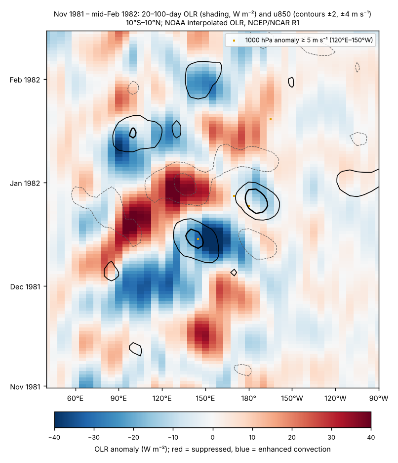
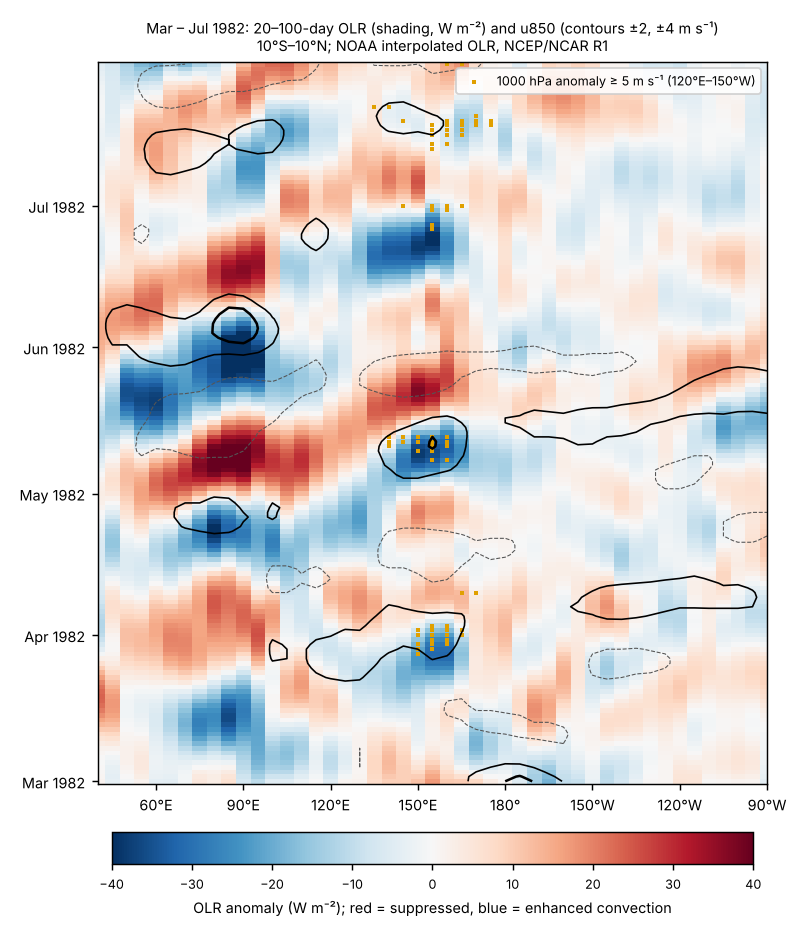
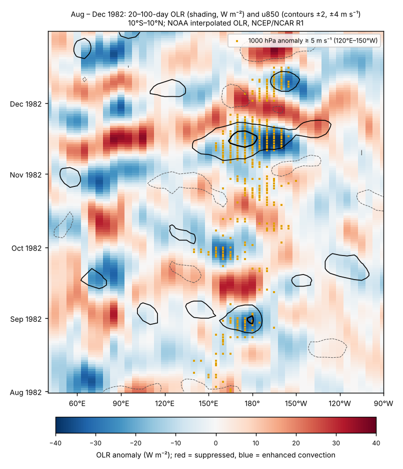

How the 1982–83 El Niño developed
Abstract
The 1982–83 El Niño is the strongest event in the Relative Oceanic Niño Index (RONI) record, peaking at +2.40 in DJF 1983, and it was neither forecast nor recognized as it began. We reconstruct its development from contemporaneous ocean observations, later reconstructions and reanalysis diagnostics, and grade each proposed cause by the strength of event-specific evidence. The equatorial Pacific entered 1982 recharged: warm water volume was positive throughout 1981 and reached the 96th percentile of 1980–2025 months in March 1982, while RONI was only +0.11 (DJF). Western-Pacific trade winds weakened from February. A strong Madden–Julian oscillation (MJO) crossed into the western Pacific in December 1981, and a documented westerly wind burst occurred on 6–16 May 1982. The decisive forcing, however, came in June: sustained westerlies west of the Date Line, preceded by cross-equatorial southerly flow east of Australia, forced a downwelling Kelvin wave that raised Christmas Island sea level by about 25 cm in July. Anomalous eastward advection by Kelvin-wave currents then produced equatorial warming in July, before the coast warmed. This reversed the order seen in the pre-1982 composite, because the zonal SST gradient is strong in mid-year. Bjerknes feedback amplified the warming from August to December; recharge–discharge dynamics and two draining episodes governed decay and lingering far-eastern warmth into mid-1983. The MJO is a probable contributor to growth in June–July (grade B, one reconstruction study) but its role in initiation is unresolved. El Chichón (29 March–4 April 1982) erupted after recharge and trade weakening had begun; its contribution to initiation is not supported and its contribution to growth is unresolved. The coupled positive Indian Ocean Dipole of September–November 1982 was largely a response to the Pacific; model studies suggest, without consensus, that it may have intensified the late-1982 peak.
Main findings
- Precondition (grade B; medium confidence). A recharged equatorial warm-water reservoir preceded onset: warm water volume +0.6 to +2.1 × 10¹⁴ m³ through 1981 and +2.15 × 10¹⁴ m³ in March 1982; upper-ocean heat content east of the Date Line rose to about +0.9 °C by March [66] [17] [25].
- Trigger of the vigorous phase (grade B; medium–high confidence). Sustained equatorial westerlies from June 1982, fed by cross-equatorial southerly flow at 150°–160°E, forced the downwelling Kelvin wave of June–July [8] [9] [59].
- Onset mechanism (grade A−; high confidence). Kelvin-wave-induced eastward advection acting on the strong mid-year zonal SST gradient explains why warming began on the equator in July rather than at the South American coast [9] [7] [5].
- Amplifier (grade B; high confidence for the observation, general theory for the mechanism). Trades, SOI, convection and SST strengthened together from August to December 1982 [66] [26].
- MJO (grade B for June–July growth; unresolved for initiation). MJO-like activity occurred in December 1981, late March 1982 and late April–June 1982; one reconstruction links the May–June MJO to the June–July Kelvin wave [59] [53] [55].
- El Chichón (grade D for initiation, C for growth). Timing argues against a trigger role; model pathways for amplification disagree and cannot be separated from El Niño's own signals in the observations [42] [43] [41] [4].
- Indian Ocean (largely a consequence). The coupled IOD came after Pacific warming was established and was as large as ENSO alone predicts; any feedback onto the Pacific peak is model-dependent [47] [48] [51].
1. Introduction
Before 1982 the canonical description of El Niño was the composite of six warm episodes since 1949 compiled by Rasmusson and Carpenter [19]. In that composite the equatorial easterlies west of the Date Line strengthen in the months before an event, give way to westerly anomalies in the preceding October–November, and SST anomalies along the coast of Ecuador and Peru begin rising around December–January, peak around April–June and then spread westward into the central Pacific. The 1982–83 event did not follow this sequence. Strong warming appeared first along the equator in July 1982 and reached the coast only afterwards, a timing and pattern described as quite different from most earlier events [9] [2]. The event was compared with the composite as it developed [20], but coupled ocean–atmosphere forecasts did not exist until the 1986 event [3], and the observing system available in 1982 lacked the moored array, altimetry and profiling floats on which later diagnoses rely.
This paper asks how the event developed: which pre-existing conditions made it possible, what started its vigorous phase, what amplified it, and how it interacted with intraseasonal variability, a major volcanic eruption and the Indian Ocean. We treat each factor separately, state the timing of its influence, and grade the evidence (A–D) according to whether it rests on event-specific observations, event-specific model or budget studies, or only on composites and general theory. Where published studies disagree we report the disagreement rather than resolve it by preference.
2. Definitions, data and methods
Index. The primary index is NOAA's Relative Oceanic Niño Index (RONI), operational since 1 February 2026: the three-month running mean of Niño 3.4 SST anomalies minus the 20°N–20°S tropical-mean anomaly, rescaled to preserve variance [18] [14]. The traditional ONI is reported alongside. On RONI the 1982–83 peak (+2.40, DJF 1983) is the largest of the three strongest historical events; on ONI it is +2.14. Monthly Niño indices are from ERSSTv6 (relative and absolute) and, for Niño 1+2, OISST.
Observations. Contemporaneous evidence comes from moored current meters and hydrography near 0°, 110°W [7], current profiles at 159°W [5], island and coastal tide gauges [15] [24], ship and island winds [8] [28], and NOAA interpolated outgoing longwave radiation (OLR). Subsurface indices (warm water volume, 0–300 m heat content) for 1981–82 are reconstructions from sparse data [66] [17]. Satellite SST from April 1982 was biased low by up to 2.5 °C by El Chichón aerosol [1]; relative and absolute Niño indices used here are based on in situ ERSST.
Reanalysis diagnostics. Daily NCEP/NCAR Reanalysis 1 winds at 1000, 850 and 200 hPa and interpolated OLR (1979–2001) were averaged over 10°S–10°N (5°S–5°N at 1000 hPa), and anomalies were formed against a 1979–2000 mean plus three annual harmonics [39] [65]. Westerly wind bursts are defined as a 1000 hPa anomaly ≥ 5 m s⁻¹ for ≥ 3 days over ≥ 10° of longitude within 120°E–150°W. MJO activity was assessed with five published indices — the Wheeler–Hendon RMM, ENSO-filtered RMM* (November–April only), OMI, FMO and VPM [37] [38] [62] — and three documented diagnostics of our own; because these share inputs, agreement is not independent validation. Candidate episodes were tested for eastward propagation from the Indian Ocean to the western Pacific (8–35 days), a lag-correlation phase speed of 2–10 m s⁻¹, and a first-baroclinic wind structure; the full test passes in 20% of the 837 overlapping 45-day windows of January 1981 – May 1983 (and T1, T2 and T4 together in 53%), so a pass is weak evidence on its own. Indian Ocean diagnostics use ERSSTv5 boxes (western pole 50°–70°E, 10°S–10°N; south-eastern pole 90°–110°E, 10°S–0°) against 1981–2010 [40].
Evidence grades. A: event-specific observation plus a model or budget study isolating the effect. B: event-specific observation with a plausible mechanism and supporting studies. C: correlation, composite or general theory only. D: speculative, disputed, or untested for this event. Intermediate grades (A−, B/C) mark evidence that falls between two levels. Grades describe the link to the 1982–83 event, not the general validity of the mechanism; the confidence words used alongside them follow the evidence table.
3. Pre-event conditions, 1981 – early 1982
Through 1981 the tropical Pacific was ENSO-neutral by SST: RONI stayed between −0.3 and +0.0 and was +0.11 in DJF 1982 (ONI −0.05). Beneath the surface, however, the equatorial warm-water reservoir was charged. Warm water volume was positive in every month of 1981 (+0.6 to +2.1 × 10¹⁴ m³) and reached +2.15 × 10¹⁴ m³ in March 1982, the 96th percentile of all months 1980–2025 (+1.5 standard deviations). Heat content in the upper 300 m between 180° and 100°W rose from +0.2 °C in January to +0.9 °C in March [66]. In recharge-oscillator theory such a reservoir is the precondition that allows a westerly-forced Kelvin wave to deepen the eastern thermocline and sustain coupled growth [17] [25]; the observation is event-specific but the subsurface record in 1981–82 is sparse.
Three further pre-conditions are documented. First, 850 hPa trades in the western Pacific were weaker than normal from February to April 1982 (−0.6 to −1.3 standardized) while Niño 1+2 remained cold (−0.7 to −1.4 °C), consistent with an onset that began in the west [66]. Second, the tropical Pacific background state had warmed after the late 1970s; a retrospective composite of the post-1976 events shows enhanced south-east Pacific trades at onset and coastal warming that follows rather than leads central warming [22]. Third, the Indian Ocean's south-eastern pole was 0.3–0.5 °C cool from February 1982, before Niño 3.4 warmed, but without the equatorial easterlies that characterize a coupled dipole (Section 5.3).
4. Development, December 1981 – January 1983
December 1981 – March 1982. A strong MJO crossed from the eastern Indian Ocean into the western Pacific in late November–December 1981, consistent with the slow (about 5 m s⁻¹) eastward propagation of convection the authors found across the events they examined; an intense cold surge near 110°E preceded the eastward shift of convection by about 12 days, and low-level westerlies reached about 170°E [53]. All five MJO indices were active (OMI 2.3, RMM 2.05). A reconstructed downwelling Kelvin wave in December 1981–January 1982 coincided with the first shift of the equatorial winds toward westerly anomalies [59]. A second MJO-like episode in late March 1982 passed our strict propagation test and was accompanied by a reanalysis westerly burst of up to +12 m s⁻¹ at 147.5°–165°E on 28 March–3 April. No published account of that burst was found, and the reconstruction places a Kelvin wave in March–April [59].
April – May 1982. RONI rose from +0.23 (FMA) to +0.74 (AMJ). On 6–16 May an 11-day westerly burst, documented from 12-hourly island, atoll and ship reports, grew from about 1000 km to over 3500 km in zonal extent, strongest over 5°N–5°S, 135°–155°E; its authors attribute it to a pressure rise in the far western equatorial Pacific following midlatitude forcing, prolonged by a pressure fall near 150°–160°E [28]. OLR-based indices show an active MJO at the time (OMI up to 2.3), but RMM stayed between 0.6 and 1.2 until 14 May and reached 1.8 only on the burst's last day. The reconstruction finds that this burst produced only a low-amplitude Kelvin wave [59].
June – July 1982: the vigorous phase begins. In June a band of anomalous southerly winds formed east of Australia at 150°–160°E and crossed the equator just before sustained westerlies appeared on the equator west of the Date Line [8]. Ship and island winds near the Date Line are reported to have shifted in late June from weak easterlies to westerlies of up to 8 m s⁻¹ within a month and to have persisted for months [9]. The resulting downwelling Kelvin wave, directly preceded by MJO convection moving from the Indian Ocean into the western Pacific, raised Christmas Island sea level by about 25 cm in July; sea level stayed high through December [59]. By June relative Niño 3.4 (ERSSTv6) was +1.12 °C and the SOI −1.0. Strong anomalous warming then began along the equator in July. An advective model initialised with the July 1982 SST field and driven by the eastward currents that follow a Kelvin-wave front reproduces the amplitude and structure of the July–October anomalies; the same currents in February–April would have produced little equatorial warming because the climatological zonal SST gradient is then weak [9].
August – December 1982: coupled growth. The Equatorial Undercurrent at 159°W decayed in August and partly reversed in September [5]; near-surface flow at 0°, 110°W reversed to eastward in August [7]. Central-Pacific OLR fell to −21 W m⁻² in August, central-Pacific trades reached −2.0 standardized in September, and RONI reached +1.14 in JAS [66]. By October SST in the equatorial zone of the eastern tropical Pacific was 5 °C above the long-term monthly mean, Galápagos sea level had risen 22 cm and the thermocline was 50–70 m deeper along the equator and the South American coast [7]. Trades, SOI, convection and SST strengthened together through December, the observational signature of Bjerknes feedback [66] [26]. A coupled positive Indian Ocean Dipole developed in September–November (DMI peak +1.04 °C in October in ERSSTv5; +0.92 °C in CPC's index). Westerly bursts in October–December were the strongest of the year, but they occurred on a 60-day mean westerly anomaly of up to +5 m s⁻¹ and after the event was established [65].
December 1982 – mid-1983: peak and discharge. The first Galápagos sea-level peak occurred in December, as warm water drained from north of the equator and the east–west sea-level slope disappeared; warm water volume fell to +1.4 × 10¹⁴ m³ [24] [15] [66]. RONI peaked at +2.40 in DJF 1983 (ONI +2.14), with a January SOI of −3.5 and central-Pacific OLR of −46 W m⁻² [66]. The Equatorial Undercurrent at 159°W reappeared rapidly in January 1983 [5]. Niño 3.4 declined from February, but a second draining episode south of the equator produced a second Galápagos sea-level peak in May and kept Niño 1+2 warm, reaching +4.0 °C in June 1983; by October 1983 sea level was below normal across the equatorial Pacific [24] [25].
5. Interactions with the broader climate system
5.1 Intraseasonal variability and westerly wind bursts. Island records show that central-Pacific easterlies weakened before each El Niño of 1950–78 except 1963, through strong westerly bursts lasting about one to three weeks [16]. That establishes the general mechanism but does not document 1982. For 1982 the documented events are the December 1981 MJO [53], the 6–16 May burst [28], the sustained June westerlies [8], and a succession of westerly pulses through November, known only from a later citation [28]. A complete 1982 episode catalogue has not been assembled. With our burst definition the reanalysis contains 13 bursts in 1982 against a 1979–2001 mean of 4.2 per year (range 0–16; 1997 had 16). Part of the late-1982 count reflects the event's own slow westerly anomaly.
The published studies disagree on the strength of the intraseasonal forcing. Bergman et al. describe winter 1981–82 MJO activity as moderate, with three intraseasonal Kelvin waves weaker than those of 1989–90 or 1996–97 in a linear model forced by reanalysis stress, and conclude that the MJO may govern the timing and initial growth of El Niño rather than its occurrence [55]. Roundy and Kiladis, using a reconstruction from island sea level, argue that 1981–83 Kelvin-wave amplitudes were larger than that wind-forced estimate and that an MJO in May–June 1982 created the environment for the burst and Kelvin wave of June–July that may have largely determined the timing and amplitude of the event [59]. Li et al. find eastward-propagating MJO activity in the 1982 developing stage but the weakest eastward power of the three super El Niños, and note that RMM and zonal-wind measures can disagree [57]. Our diagnostics are consistent with all three: strong MJO-like activity in December 1981 and late March 1982, weaker activity in January–February 1982, and probable MJO-like convection in late June. The MJO is therefore graded B as a contributor to growth in June–July 1982 (one event-specific reconstruction; no model experiment isolates the effect) and unresolved for initiation. From October 1982, MJO convection reached 170°–155°W and Indian Ocean–Maritime Continent intraseasonal OLR variance was the second lowest of 22 seasons, consistent with the eastward shift and reduced activity reported for exceptional warm events [33] [34] [57]: in the mature phase the influence ran from ENSO to the MJO.
Two candidate triggers are not supported for 1982. No twin tropical cyclogenesis occurred during the 1982–83 El Niño under either the Keen or the Harrison–Giese definition [32], although cyclone pairs produced strong westerlies in the 1970s [12]. The reanalysis bursts of 28 March–3 April and of 21–25 August and 27 August–3 September lack published documentation, and the August–September pair falls in a window that fails our circulation test.
5.2 El Chichón. The eruptions of 29 March and 3–4 April 1982 released about 7.5 Tg of SO₂, with plumes reaching about 31 km [41]. Their possible contribution to initiation and to growth is judged separately. Initiation. The eruption followed the recharge of the warm-water reservoir, the weakening of the western-Pacific trades and the December 1981 MJO; the 28 March–3 April burst began the day before the first eruption. Khodri et al. note high equatorial heat content before the eruption and that a warm event was already under way during two of the four large historical eruptions they list [13]; in GFDL CM2.1 ensembles the volcanic effect on ENSO depends on the ocean state and is unlikely to be visible when a strong El Niño is already developing at an April eruption [42]. With three instrumental cases, Chai et al. state that post-eruption westerlies cannot be distinguished from internal variability [43]. A trigger role is not supported (grade D). Growth. Several models produce western-Pacific westerlies within months of a tropical eruption, through tropical African cooling [13], South–Southeast Asian and West African drying [43], Maritime Continent cooling [44], or land drying that favours MJO propagation and more bursts [41]. The observed July–November 1982 signals cited for the last pathway are also normal El Niño responses, the models disagree on pathway and magnitude, and proxy records show no consistent ENSO response to eruptions over the last millennium [4]. A contribution to growth is possible but unresolved (grade C).
5.3 Indian Ocean. The south-eastern pole cooled from February 1982 without the equatorial easterlies that drive the Indian Ocean's own Bjerknes feedback; equatorial zonal-wind anomalies over 70°–90°E were weak and changeable through mid-year (−1.0 m s⁻¹ in May, +1.0 in June, −0.4 to −0.9 in July–August) and became strongly easterly only in October–November (−2.5 to −3.1 m s⁻¹), when the DMI peaked [65] [40]. Regressing September–November DMI on Niño 3.4 over 1950–2024 (excluding 1982) predicts +0.61 °C for 1982; the observed value was +0.58 °C. The 1982 IOD was therefore as large as ENSO forcing alone would produce, consistent with the El Niño-driven loss of Maritime Continent convection [50]. Feedback onto the Pacific is supported only by models: forecasts with Indian Ocean coupling suppressed underestimate the 1982–83 peak, although that model over-predicted the 1982 IOD [47]; IOD-induced winds in a simple model reproduce eastern-Pacific intensification of the 1972, 1982 and 1997 events [48]; and decoupling the Indian and Atlantic Oceans weakens super El Niños [49]. One coupled model, by contrast, finds no significant Pacific impact from a fall IOD [51]. Rawinsonde winds show an eastward-propagating seasonal wind mode linking Indonesian convection to the Pacific; in 1982 the mode lacked the usual large autumn precursor and its amplitude and rotation began early in the year, although the authors note elements of the precursor in autumn 1981 and judge the far-western-Pacific wind evolution before 1982 not significantly different from earlier events [54]. The Indian Ocean is graded as largely a consequence, with a plausible but model-dependent amplifying feedback in late 1982 (grade C) and a possible contribution to decay through basin-wide warming in 1983 [51] [52].
5.4 Tropical Atlantic. The tropical North Atlantic cooled by 0.5–0.9 °C in August–December 1982 [66], a pattern usually interpreted as a lagged response to El Niño; no event-specific study of its feedback was found.
6. Causal synthesis and competing explanations
The evidence supports a three-stage account. Preparation (1981 – early 1982): a recharged warm-water reservoir, weak western-Pacific trades from February, and intraseasonal westerly forcing in December 1981 and March 1982 set the system up but did not produce sustained warming; RONI remained below +0.5 through MAM (+0.46). Triggering of the vigorous phase (June–July 1982): sustained westerlies west of the Date Line, preceded by cross-equatorial southerly flow and probably favoured by an MJO, forced a downwelling Kelvin wave whose eastward currents, acting on the strong mid-year SST gradient, produced equatorial warming from July. This is the best-documented causal link in the event, resting on contemporaneous wind and current observations, an event-specific advection model and a sea-level reconstruction (grade A− for the advective mechanism; B for the role of the June westerlies and the MJO). Coupled growth and discharge (August 1982 – mid-1983): Bjerknes feedback amplified the anomaly to a December–January peak, after which discharge of the warm-water reservoir, in two episodes, ended the event and prolonged far-eastern warmth.
Three alternative emphases remain open. The first places greater weight on the December 1981 Kelvin wave as the initiating event [59] [27]; the second treats 1982 as a case of weak intraseasonal forcing in which recharge alone made onset inevitable [55]; the third invokes El Chichón as an external amplifier [41]. The first two differ mainly in the strength of 1981–82 Kelvin waves, which the available reconstructions do not settle; the third is not supported for initiation by the timing and is not separable from internal variability for growth. Our account treats the June–July sequence as decisive because it is the only episode for which wind forcing, ocean response and subsequent SST evolution are all documented.
7. What was knowable at the time
Forecasters in early 1982 had the Rasmusson–Carpenter composite, in which coastal warming leads and western-Pacific easterlies strengthen before onset [19]. In 1982 the western-Pacific trades weakened from February, there was no early coastal warming (Niño 1+2 was −0.7 to −1.4 °C in February–April), and satellite SST was biased cold by volcanic aerosol [1]. An observer comparing early 1982 with the composite would have seen an event that did not look like El Niño. The recharge of the warm-water reservoir, now recognized as the most reliable precursor [17], could not be monitored in real time, and coupled dynamical forecasts began only with the 1986 event [3].
8. Uncertainties
- Subsurface indices for 1981–82 are reconstructions from sparse XBT and station data; the warm-water-volume percentile is therefore uncertain.
- Reanalysis winds in 1982 rest on sparse island and ship reports, which the Kelvin-wave reconstruction's authors describe as substantially biased [59]; our burst list uses a single reanalysis; a direct ERA5 check confirmed 11 of the 13 bursts in 1982 (see the ERA5 check section), but without an ERA5 1979–2000 baseline it tests the timing of individual bursts, not the yearly count.
- The Kelvin-wave reconstruction underestimates amplitudes and is the only study linking the May–June MJO to the June–July wave; the competing wind-forced estimate finds weaker 1981–82 waves [55].
- MJO indices and our diagnostics share OLR and wind inputs; their agreement is not independent validation, and propagation-test results depend on window length.
- Several primary sources were read only in abstract (the 1983 Science papers; Weickmann 1991) and one not at all (Gill and Rasmusson 1983); claims citing them are limited to what the accessible text supports (see the citation audit).
- Satellite SST in 1982 carries aerosol and calibration biases [1] [45]; conclusions about SST rely on in situ ERSST.
9. Conclusion
The 1982–83 El Niño grew from a recharged equatorial Pacific that showed little surface signal until mid-1982. Intraseasonal westerly forcing in December 1981 and spring 1982 prepared the ocean, but the event's vigorous phase began with sustained westerlies west of the Date Line in June, a downwelling Kelvin wave in June–July and Kelvin-wave-induced advection acting on the strong mid-year zonal SST gradient. That seasonal timing explains why the event warmed first on the equator and departed from the pre-1982 composite. Bjerknes feedback carried it to a RONI peak of +2.40, and recharge–discharge dynamics ended it while prolonging warmth in the far east into mid-1983. The MJO probably contributed to growth in June–July 1982, El Chichón is not supported as a trigger, and the Indian Ocean Dipole was chiefly a response that may have amplified the peak. These grades rest on the evidence available in October 2026 and will be revised as better-constrained wind reconstructions and model experiments isolating each factor become available.
Evidence base: scope, index and data
This section and those that follow hold the evidence on which the paper above rests. Primary index: NOAA's Relative Oceanic Niño Index (RONI), official since 1 February 2026 [18] [14]: the three-month mean of Niño 3.4 minus the 20°N–20°S tropical-mean anomaly, rescaled. On RONI the 1982–83 peak is +2.40 (DJF 1983), the strongest of the three historical events in this series; on the traditional ONI it is +2.14.
Observing system in 1982. No TAO mooring array (completed in 1994), no satellite altimetry (from 1992) and no Argo floats. The evidence rests on ship and XBT tracks, island tide gauges, a few moorings (e.g. 0°, 110°W) and later reanalyses. Satellite SST from April 1982 was biased low by up to 2.5 °C by El Chichón aerosol [1]. Subsurface indices for 1981–82 are reconstructions from sparse data.
Monthly indices, Jan 1981 – Jun 1983
Values from NOAA CPC and PMEL files as held in the site's data archive; read from the source files, not retyped.
| Month | Season | RONI | ONI | rel. Niño 3.4 (ERSSTv6) | Niño 3.4 (ERSSTv6) | Niño 1+2 (OISST) | SOI | W Pac trades | C Pac trades | C Pac OLR | Heat content 180–100°W | WWV | DMI (CPC) |
|---|---|---|---|---|---|---|---|---|---|---|---|---|---|
| 1981-01 | DJF 1981 | -0.03 | -0.27 | -0.27 | -0.53 | — | 0.4 | -0.3 | 0.7 | 10.48 | 0.36 | 1.371 | -0.08 |
| 1981-02 | JFM 1981 | -0.18 | -0.42 | -0.26 | -0.54 | — | -0.2 | -1.3 | -0.4 | -3.43 | 0.3 | 1.211 | 0.23 |
| 1981-03 | FMA 1981 | -0.28 | -0.41 | 0.0 | -0.16 | — | -1.3 | -1.0 | 0.2 | -16.15 | 1.02 | 2.053 | 0.08 |
| 1981-04 | MAM 1981 | -0.24 | -0.27 | -0.58 | -0.49 | — | -0.1 | -1.5 | -0.3 | -8.0 | 0.77 | 1.691 | 0.3 |
| 1981-05 | AMJ 1981 | -0.3 | -0.28 | -0.15 | -0.13 | — | 0.8 | 0.5 | 0.8 | 7.64 | 0.24 | 1.172 | 0.21 |
| 1981-06 | MJJ 1981 | -0.26 | -0.27 | -0.17 | -0.21 | — | 1.2 | -0.5 | 0.4 | 3.85 | -0.22 | 0.774 | -0.1 |
| 1981-07 | JJA 1981 | -0.23 | -0.28 | -0.46 | -0.46 | — | 0.8 | 0.1 | 1.2 | 3.7 | -0.66 | 0.581 | -0.43 |
| 1981-08 | JAS 1981 | -0.16 | -0.23 | -0.05 | -0.16 | — | 0.7 | 0.5 | 0.5 | 11.72 | -0.59 | 0.703 | -0.29 |
| 1981-09 | ASO 1981 | -0.02 | -0.08 | 0.04 | -0.05 | — | 0.3 | 0.2 | 1.7 | 3.33 | 0.14 | 1.606 | -0.48 |
| 1981-10 | SON 1981 | -0.17 | -0.16 | -0.07 | -0.01 | — | -0.4 | 0.2 | 0.6 | 8.91 | 0.25 | 1.394 | -0.28 |
| 1981-11 | OND 1981 | -0.21 | -0.19 | -0.49 | -0.4 | — | 0.2 | 0.8 | 0.9 | 9.68 | 0.02 | 0.905 | 0.01 |
| 1981-12 | NDJ 1981 | -0.08 | -0.14 | -0.07 | -0.14 | — | 0.5 | -0.8 | 0.6 | 2.96 | -0.22 | 0.935 | -0.0 |
| 1982-01 | DJF 1982 | 0.11 | -0.05 | 0.32 | 0.15 | -0.24 | 1.2 | -0.0 | 0.3 | 18.3 | 0.21 | 1.153 | 0.22 |
| 1982-02 | JFM 1982 | 0.22 | 0.02 | 0.07 | -0.14 | -0.72 | 0.3 | -0.6 | -0.3 | 6.13 | 0.56 | 1.966 | 0.34 |
| 1982-03 | FMA 1982 | 0.23 | 0.07 | 0.29 | 0.06 | -1.38 | 0.6 | -1.3 | -0.3 | 1.03 | 0.92 | 2.153 | 0.26 |
| 1982-04 | MAM 1982 | 0.46 | 0.34 | 0.34 | 0.31 | -1.16 | 0.1 | -0.8 | -0.6 | 4.6 | 0.93 | 1.762 | 0.27 |
| 1982-05 | AMJ 1982 | 0.74 | 0.65 | 0.76 | 0.68 | -0.62 | -0.3 | -0.9 | -0.8 | 12.02 | 0.96 | 1.505 | 0.49 |
| 1982-06 | MJJ 1982 | 0.84 | 0.73 | 1.12 | 0.98 | -0.29 | -1.0 | -1.4 | -0.6 | -0.85 | 1.01 | 1.723 | 0.38 |
| 1982-07 | JJA 1982 | 0.89 | 0.78 | 0.63 | 0.55 | 0.24 | -1.5 | -2.1 | -0.6 | -13.04 | 1.11 | 1.756 | 0.51 |
| 1982-08 | JAS 1982 | 1.14 | 0.99 | 0.93 | 0.82 | 0.85 | -1.7 | -2.5 | -0.8 | -21.2 | 1.61 | 2.336 | 0.57 |
| 1982-09 | ASO 1982 | 1.64 | 1.45 | 1.85 | 1.6 | 1.33 | -1.7 | -2.2 | -2.0 | -19.5 | 1.86 | 2.596 | 0.53 |
| 1982-10 | SON 1982 | 2.03 | 1.82 | 2.14 | 1.96 | 1.8 | -1.7 | -1.8 | -2.5 | -35.8 | 2.07 | 2.879 | 0.92 |
| 1982-11 | OND 1982 | 2.24 | 2.03 | 2.1 | 1.93 | 2.78 | -2.6 | -2.3 | -3.4 | -44.89 | 1.92 | 2.48 | 0.58 |
| 1982-12 | NDJ 1982 | 2.36 | 2.12 | 2.48 | 2.22 | 2.89 | -2.2 | 0.3 | -3.2 | -40.99 | 1.45 | 1.403 | -0.18 |
| 1983-01 | DJF 1983 | 2.4 | 2.14 | 2.5 | 2.23 | 2.3 | -3.5 | -0.7 | -2.9 | -46.43 | 0.05 | -0.37 | -0.3 |
| 1983-02 | JFM 1983 | 2.15 | 1.91 | 2.21 | 1.99 | 1.55 | -3.6 | -0.1 | -2.6 | -38.3 | -0.81 | -1.252 | -0.35 |
| 1983-03 | FMA 1983 | 1.67 | 1.52 | 1.74 | 1.53 | 1.73 | -2.4 | -0.5 | -3.4 | -20.0 | -0.95 | -1.742 | -0.62 |
| 1983-04 | MAM 1983 | 1.3 | 1.23 | 1.06 | 1.07 | 2.37 | -0.9 | -0.1 | -3.1 | -12.13 | 0.23 | -0.166 | -0.52 |
| 1983-05 | AMJ 1983 | 0.87 | 0.95 | 1.09 | 1.1 | 3.26 | 0.6 | -0.3 | -2.0 | -21.68 | -0.32 | -0.887 | -0.15 |
| 1983-06 | MJJ 1983 | 0.47 | 0.62 | 0.46 | 0.68 | 4.03 | 0.0 | -0.4 | -0.9 | -18.06 | -1.12 | -2.015 | 0.28 |
RONI and ONI are three-month means centred on the month. SOI and trade-wind indices are standardized (negative SOI and negative trade anomalies are El Niño-like). OLR in W m⁻² (negative = more convection). Heat content in °C vs 1981–2010; WWV in 10¹⁴ m³; DMI in °C. OISST begins Sep 1981 and its 1982 values may carry residual El Chichón bias.
Timeline
| Date | Observation | Proposed mechanism | Source | Confidence |
|---|---|---|---|---|
| 1981 | Warm water volume (WWV) positive all year, +0.6 to +2.1 × 10¹⁴ m³; upper-300 m heat content (180°–100°W) between −0.7 and +1.0 °C. | Recharge of the equatorial warm-water reservoir, the precondition in recharge-oscillator theory. | [66] [17] [25] | Medium (sparse 1981 subsurface data) |
| Late Nov 1981 – Jan 1982 | Strong, coherent MJO: OMI amplitude ≥ 1 from 25 Nov to 21 Jan (max 2.3); 20–100-day convection moves from 105°E (26 Nov) to 155°E (14–17 Dec) with 850 hPa westerlies behind it; also seen in FMO, VPM, RMM (2.05) and the ENSO-filtered RMM* (max 1.7). A case study of this event finds slow (~5 m s⁻¹) eastward movement of convection, preceded about 12 days earlier by an intense cold surge and convective increase near 110°E, with low-level westerlies reaching about 170°E. Weickmann reports interannual transitions in Sep 1981–Apr 1982 coinciding with strong MJO passages into the Pacific; the reconstructed Kelvin wave of Dec 1981–Jan 1982 coincides with the first shift toward westerly anomalies. | Intraseasonal westerly forcing in the western Pacific during the transition phase (association, not isolated as a cause). | [53] [27] [59] [65] [38] | High (MJO event); Low (effect on ENSO) |
| DJF 1982 | RONI +0.11, ONI −0.05: ENSO-neutral start. | — | [66] | High |
| Feb–Apr 1982 | 850 hPa trades weaker than normal in the western Pacific (−0.6 to −1.3 standardized); heat content rises to +0.9 °C. Niño 1+2 cold (−0.72 to −1.38 °C, OISST). | Early westerly anomalies in the west; coastal coolness consistent with enhanced south-east Pacific trades in the post-1976 background state. | [66] [22] | Medium |
| 28 Mar – 3 Apr 1982 | Reanalysis westerly burst: 1000 hPa anomaly up to +12 m s⁻¹ at 147.5°–165°E (NCEP/NCAR R1, 5°S–5°N). MJO only marginal (OMI phase 6, amplitude 1.0–1.4 for about a week). No published account found. | Possible early Kelvin-wave forcing; ocean response not documented. | [65] [39] | Low (reanalysis only) |
| 29 Mar and 3–4 Apr 1982 | El Chichón eruptions (Mexico) inject aerosol into the tropical stratosphere. Just before them (March) the warm water volume anomaly is +2.15 × 10¹⁴ m³, the 96th percentile of 1980–2025 months, and heat content is +0.9 °C. Satellite (AVHRR) SST biased low by up to 2.5 °C for months. | Pre-existing recharge; candidate volcanic forcing evaluated separately below. Certainly an observing-system problem for satellite SST. | [45] [66] [1] | High (dates, recharge, bias); Low (forcing role) |
| 6–16 May 1982 | Westerly wind burst documented from 12-hourly island, atoll and ship reports: 11 days, within about 5° of the equator, growing from about 1000 km to over 3500 km in zonal extent; strongest over 135°–155°E. OLR-based indices show an active MJO (OMI phases 6–7, up to 2.3; convection at 80°E on 21–27 Apr, then 150°E by 9 May), but BoM RMM is 0.6–1.2 until 14 May, reaching 1.8 only on 16 May. | Authors attribute the burst to a midlatitude-forced pressure rise in the far western equatorial Pacific, prolonged by a pressure fall near 150°–160°E; they describe it as the first sustained burst of 1982, about three months before onset. A later reconstruction finds it produced only a low-amplitude Kelvin wave. | [28] [59] [65] | High (wind event); Low (contribution) |
| May–Jun 1982 | ERSSTv6 relative Niño 3.4 rises from +0.76 to +1.12 °C; SOI −1.0 by June; RONI MAM +0.46 → AMJ +0.74. | Onset of ocean–atmosphere coupling. | [66] | High |
| Jun 1982 | Band of anomalous southerly winds east of Australia (150°–160°E) crosses the equator just before sustained westerlies appear on the equator west of the Date Line. Ship and island winds near the Date Line shift in late June from weak easterlies (2–5 m s⁻¹) to westerlies of up to 8 m s⁻¹ within a month, then persist for months (Sadler and Kilonsky 1983, as reported by Harrison and Schopf — indirect). | Cross-equatorial flow feeding sustained equatorial westerlies that force downwelling Kelvin waves. | [8] [9] | Medium (two studies) |
| Jun–Jul 1982 | Reconstructed downwelling Kelvin wave, preceded by MJO convection moving from the Indian Ocean into the western Pacific; Christmas Island sea level jumps about 25 cm as it passes in July and stays high through December. | MJO-favoured westerlies force the Kelvin wave that the authors suggest largely produced the rapid July development. | [59] | Medium (one reconstruction study) |
| Jul 1982 | Strong anomalous warming starts along the equator, before the South American coast warms. | Kelvin-wave-induced eastward currents advect warm water while the seasonal east–west SST gradient is strong; reproduced by an advective and a full ocean model. | [9] | Medium–high |
| Aug 1982 | Equatorial Undercurrent at 159°W decays; near-surface flow at 0°, 110°W reverses to eastward; central-Pacific OLR −21 W m⁻². | Basin-wide adjustment of the sea-surface slope to westerly forcing; deep convection moving east. | [5] [7] [66] | High |
| Sep 1982 | Undercurrent partly reversed at 159°W; central Pacific trades −2.0 standardized; RONI JAS +1.14. | Bjerknes feedback: warming weakens trades, which deepen the thermocline in the east. | [5] [66] | High (observation); general theory (mechanism) |
| Oct 1982 | SST in the equatorial zone of the eastern tropical Pacific 5 °C above the long-term monthly mean; Galápagos sea level +22 cm; thermocline 50–70 m deeper along the equator and the South American coast. | Consistent with downwelling Kelvin waves and coupled growth (interpretation; see the Kelvin-wave row of the evidence table). | [7] | High |
| 21 Aug – 3 Sep 1982 | Two reanalysis westerly bursts: 21–25 Aug (peak +7.3 m s⁻¹ at 160°E) and 27 Aug–3 Sep (peak +9.4 m s⁻¹ on 30 Aug at 177.5°E, spanning 162.5°–185°E); convection moved from 65°–70°E (2–8 Aug) to 175°–180°E (29 Aug–1 Sep), but the circulation test failed and RMM was 0.5–1.0. | Burst during the growth phase (RONI JAS +1.14); not supported as MJO-organised. | [65] | Low |
| Sep–Nov 1982 | Coupled positive Indian Ocean Dipole: DMI peaks in October (+1.04 °C ERSSTv5; CPC +0.92 °C) with equatorial Indian Ocean surface easterly anomalies of −2.5 to −3.1 m s⁻¹ (Oct–Nov). The eastern-pole cooling had begun in January–February, but equatorial winds were weak and changeable (−1.0 m s⁻¹ in May, +1.0 in June, −0.4 to −0.9 in July–August) until strong easterlies set in during October–November. | Its SON size matches what Niño 3.4 alone predicts (see Indian–Pacific section); model studies suggest it may in turn have intensified the eastern-Pacific warming. | [65] [40] [66] [47] [48] | Medium (observation); Low (feedback) |
| Dec 1982 | First Galápagos sea-level peak; warm water drains from north of the equator; by year-end the normal east–west sea-level slope is gone. WWV falls to +1.4 × 10¹⁴ m³. | Discharge of the warm-water reservoir driven by western Pacific westerlies. | [24] [15] [66] | High |
| DJF 1983 | Peak: RONI +2.40 (ONI +2.14). January SOI −3.5; central-Pacific OLR −46 W m⁻²; WWV negative. | Mature, fully coupled state; discharge under way. | [66] | High |
| Dec 1982 – Apr 1983 | Western Pacific surface winds turn to easterly anomalies (−1.0 to −1.6 m s⁻¹, 130°–160°E); tropical Indian Ocean basin-wide warm (+0.1 to +0.2 °C, 40°–100°E, 20°S–20°N). | One modelled pathway by which basin-wide Indian Ocean warming hastens the end of El Niño. | [65] [51] | Low |
| Jan 1983 | Equatorial Undercurrent at 159°W rapidly reappears. | Recovery of the zonal pressure gradient in the central Pacific. | [5] | High |
| Feb–Jun 1983 | Niño 3.4 declines while Niño 1+2 rises to +4.0 °C in June; second Galápagos sea-level peak in May as warm water drains from south of the equator. | A second, southern-hemisphere draining episode prolongs warmth in the far east. | [24] [66] | High |
| Oct 1983 | Sea level below normal across the equatorial Pacific. | Warm water lost to higher latitudes: the end of the cycle. | [24] [25] | High |
Confidence refers to the observation and its link to the stated mechanism for this event, not to general ENSO theory.
Evidence table
| Factor | Observed conditions and timing | Proposed mechanism | Role in development | Evidence type | Confidence | Key sources |
|---|---|---|---|---|---|---|
| Warm-water recharge | WWV positive through 1981 and early 1982; heat content rising from Jan 1982. | A deep, charged warm pool lets Kelvin waves raise eastern SST and sustain growth. | Precondition | B: observation (sparse) + theory confirmed across 1980–99 | Medium | [66] [17] [25] |
| Sustained equatorial westerlies west of the Date Line (from Jun 1982) | Appear in June; later extend east and persist. | Wind forcing of downwelling Kelvin waves and eastward currents. | Trigger of the vigorous phase, then amplifier | B: event-specific observation | Medium–high | [8] [15] [5] |
| Cross-equatorial southerly jet east of Australia (Jun 1982) | Formed just before the sustained westerlies. | Feeds the equatorial westerlies. | Trigger component (proposed) | B/C: one event-specific study; similar precursors in 1957, 1965, 1972 | Medium | [8] |
| Downwelling Kelvin waves and anomalous eastward advection | Equatorial warming from July; undercurrent collapse Aug–Sep; thermocline 50–70 m deeper by Oct. | Eastward transfer of warm water and anomalous advection. | Core onset mechanism | A−: event observations + advective and full ocean model experiments | High | [9] [15] [7] [5] [10] |
| Seasonal timing (annual cycle of the zonal SST gradient) | Westerly-driven currents arrived mid-year rather than in Feb–Apr. | The same currents give equatorial-first warming when the zonal SST gradient is strong. | Redirector of the onset pattern | B: model experiment for this event | Medium–high | [9] |
| Post-1976 Pacific background state | Tropical Pacific warmer after the late 1970s; south-east Pacific trades enhanced at onset; coast cold in early 1982. | Background state alters the onset cyclone and makes coastal warming follow, not lead, central warming. | Precondition / redirector | B: retrospective composite (1982, 1986–87, 1991) | Medium | [22] |
| Bjerknes coupled feedback | Trades, SOI, OLR and SST strengthen together from Aug to Dec 1982. | Warming → weaker trades → deeper eastern thermocline → more warming. | Amplifier / feedback | B: event observations (CPC indices) + general theory | High | [66] [26] |
| Recharge–discharge and the second eastern peak | WWV discharged by Jan 1983; two draining episodes (north then south of the equator). | Discharge ends the event; southern draining prolongs far-eastern warmth to mid-1983. | Decay and lingering warmth | A−: sea-level budget for this event | High | [24] [25] |
| Tropical cyclone pairs | No twin tropical cyclogenesis in the JTWC best tracks during the 1982–83 El Niño under either the Keen or the Harrison–Giese definition (1969–2006 survey). | Cyclone pairs straddling the equator produce brief strong westerlies (shown for 1971–79). | Not supported for 1982 | C: best-track survey (one study) | Medium | [32] [12] |
| Westerly wind bursts (documented episodes) | Island records show the central-Pacific easterlies weakened before each El Niño of 1950–78 except 1963, through bursts of 1–3 weeks (general mechanism, not 1982). For 1982: a documented 11-day burst on 6–16 May; sustained westerlies from June; a succession of westerly pulses to November (cited by Chu and Frederick). Reanalysis adds bursts on 28 Mar–3 Apr, 21–25 Aug and 27 Aug–3 Sep. A complete 1982 episode catalogue has not yet been assembled in this review. | Bursts force downwelling Kelvin waves; the ocean response to individual 1982 bursts is not isolated in the sources read. | Candidate trigger (May) and amplifier (Aug–Dec) | B for the May wind event; C for its contribution | Medium (event); Low (contribution) | [16] [28] [8] [65] |
| MJO | MJO-like activity in Dec 1981 (all five indices) and late Mar 1982 (strict propagation test passed); late Apr–May 1982 MJO-like in OLR-based indices but marginal in RMM during the May burst. A peer-reviewed reconstruction links the May–June MJO to a June–July Kelvin wave (Christmas Island sea level +25 cm in July). From Oct 1982 MJO convection reached 155°–170°W and Indian Ocean–Maritime Continent intraseasonal OLR variance was the second lowest of 1979–2001. | MJO westerlies can force Kelvin waves; conversely El Niño shifts MJO activity east (ENSO influence on the MJO). | Probable amplifier of growth (Jun–Jul); onset unresolved; late-1982 changes partly a consequence | B for Jun–Jul 1982 (one reconstruction study, no model isolation); C otherwise | Medium (Jun–Jul); Low (otherwise) | [59] [27] [57] [65] [33] |
| El Chichón: initiation | Erupted 29 Mar–4 Apr 1982, after recharge (WWV 96th percentile) and after western-Pacific trade weakening and the Dec 1981 MJO; the 28 Mar–3 Apr reanalysis burst began the day before the first eruption. | Proposed pathways act through land cooling and drying months later. | Initiation not supported by the timing; unresolved | D: no study isolates the observed onset | Low | [45] [13] [42] [43] |
| El Chichón: subsequent growth | Maritime Continent drying and enhanced western-Pacific MJO activity in Jul–Nov 1982 (observed composite with Pinatubo). | Land drying → MJO propagation → more bursts (CESM2); African or South–Southeast Asian drying → westerlies (other models). Pathways and magnitudes differ between models, and the observed signals are also typical El Niño responses. | Possible weak amplifier, unresolved | C: model studies; observations cannot separate forcing from internal variability | Low | [41] [43] [13] [44] [42] [4] |
| Indian Ocean: early eastern-pole cooling (Jan–Aug 1982) | SE tropical Indian Ocean −0.3 to −0.5 °C from Feb, before Niño 3.4 warmed; no sustained equatorial easterlies before October. | Not the Indian Ocean Bjerknes feedback at this stage; origin not established. | Coincident; direction unresolved | C: indices only | Low | [65] [40] |
| Indian Ocean: Pacific forcing of the IOD (Sep–Nov 1982) | Coupled positive IOD after Niño 3.4 exceeded +1.3 °C; SON DMI +0.58 °C against +0.61 °C expected from Niño 3.4 (1950–2024 regression). | Eastward shift of Walker circulation → easterlies over the eastern Indian Ocean. | Consequence (largely ENSO-driven) | B/C: event observations + regression + mechanism | Medium | [65] [50] |
| Indian Ocean: feedback on Pacific growth and peak | Forecast runs without Indian Ocean coupling underestimate the 1982–83 peak (the model also over-predicted the 1982 IOD); a simple model forced with IOD-induced winds reproduces eastern-Pacific intensification of 1972, 1982 and 1997; decoupled hindcasts weaken super El Niños. One CGCM finds no significant Pacific impact from a fall IOD. | IOD-induced westerly anomalies over the Pacific strengthen eastern warming. | Possible amplifier of growth (not initiation) | C: event-including model experiments, model-dependent | Low–medium | [47] [48] [49] [51] |
| Indian Ocean: decay and transition | Basin-wide warming Dec 1982–Jul 1983; western Pacific easterly anomalies Dec–Apr; a second positive DMI in Jun–Aug 1983; NDJ 1983–84 Niño 3.4 −0.8 °C (detrended ERSSTv5). | Basin warming strengthens western-Pacific easterlies; a positive IOD favours La Niña the following year. | Possible contributor to decay | C: model study + statistics | Low | [51] [52] [65] |
| Tropical North Atlantic cooling (late 1982) | TNA −0.5 to −0.9 °C, Aug–Dec 1982. | Usually a lagged response to El Niño. | Probable consequence | C: index only | Low | [66] |
Evidence grades: A = event-specific observation plus a model or heat-budget study isolating the effect; B = event-specific observation with a plausible mechanism and supporting studies; C = correlation, composite or general theory only; D = speculative, disputed, or not yet tested for this event.
MJO contribution (assessment)
Answer so far. Multiple diagnostics and daily-field inspection support identifying the December 1981 and late March 1982 episodes as MJO-like intraseasonal activity, the late April–May 1982 sequence as MJO-like in OLR-based measures, and late June 1982 as probable MJO-like activity. One peer-reviewed reconstruction links the wind forcing to an ocean response [59]. In it, an MJO in May–June 1982 favoured a westerly burst and a downwelling Kelvin wave in June–July, which the authors suggest may have been largely responsible for the rapid development of El Niño conditions in July. Christmas Island sea level rose about 25 cm as that wave passed and stayed high through December. The same study finds the documented May burst produced only a low-amplitude Kelvin wave. On that basis the MJO is a probable contributor to growth in June–July 1982 (grade B: one event-specific reconstruction with stated biases, no model experiment isolating the effect). Its role in initiation remains unresolved. From late 1982 the MJO was itself altered by El Niño, so the interaction ran both ways.
Event-specific literature.
- Weickmann (1991), abstract only: six MJOs in September 1981–April 1982, with interannual transitions coinciding with strong MJO passages into the Pacific [27].
- Weickmann and Khalsa (1990), full text: a case study of the strong November–December 1981 oscillation. Convection moved slowly (~5 m s⁻¹) from the eastern Indian Ocean to the western Pacific, preceded by an intense cold surge near 110°E about 12 days earlier; low-level westerlies reached about 170°E and convection intensified near 150°E [53]. This independently confirms the December 1981 episode, and shows a midlatitude contribution to it.
- Bergman, Hendon and Weickmann (2001), full text: a comparison of the winters of 1981–82, 1989–90 and 1996–97 [55]. They describe 1981–82 MJO activity as moderate ("relatively quiescent" in the abstract), with three intraseasonal Kelvin waves weaker than in the other two winters. Those waves come from a linear shallow-water model forced by NCEP/NCAR stress, whose errors they expect to be larger for 1981–82. They conclude that the MJO may matter for the timing and initial growth of El Niño rather than causing the event. Roundy and Kiladis later argued that Kelvin-wave amplitudes in 1981–83 were larger than this wind-forced reconstruction implies [59]. The published studies therefore disagree on how strong the 1981–82 intraseasonal forcing was. Our indices show a strong December 1981 episode (OMI 2.3, RMM 2.05) but weaker activity in January–March 1982.
- NOAA PSL Research Spotlight (2001): a summary of the same work for 1997–98, where an MJO-forced Kelvin wave warmed the central Pacific and initiated the coupled growth [56]. It describes the MJO acting on ENSO; it does not address ENSO's effect on the MJO or the 1982 event.
- Li et al. (2023), full text: an ERA-Interim and BoM RMM analysis of the three super El Niños [57]. It finds eastward-propagating MJO activity in the developing stage (February–September) of all three, but the weakest eastward power in 1982/83 (main period about 40 days). It reports two prominent eastward propagations of MJO westerlies in that stage. In their Figure 2A, RMM exceeds 1.2 in early April and late May–early June 1982. The authors note that the MJO's role in 1982 "had not been deeply examined due to the lack of data". They link the weak, eastward-shifted mature-stage MJO to El Niño-driven circulation and moisture anomalies, and warn that RMM and zonal-wind amplitude can give contradictory results.
- Roundy and Kiladis (2007), full text [59]. Equatorial dynamic height back to 1974 is reconstructed by regressing TAO data on daily sea level at 11 island and coastal stations plus an eastern-Pacific OLR index. The highest-amplitude Kelvin waves of 1982 were in December 1981–January 1982, March–April, June–July and November–December. The December 1981–January 1982 wave coincided with the first shift of the winds toward westerly anomalies. The June–July wave was directly preceded by MJO convection moving from the Indian Ocean into the western Pacific; Christmas Island sea level jumped about 25 cm with its passage in July and stayed high through December. The May burst produced a low-amplitude wave, and the November wave was the most intense but came after El Niño had peaked. The authors caution that the reconstruction underestimates amplitudes and that the 1982 winds contain substantial biases. Their conference abstract makes the same points [58]; their 2006 paper covers 1988–2005 only [60].
- Chu and Frederick (1990) document the May 1982 burst and attribute its origin to midlatitude pressure forcing; they do not discuss the MJO [28].
Published indices: what was available for each episode. All five files were retrieved on 18 October 2026.
| Index (file) | Inputs | ENSO treatment | Coverage used | Source |
|---|---|---|---|---|
| Wheeler–Hendon RMM (rmm.74toRealtime.txt) | NOAA interpolated OLR, NCEP u850, u200 | For 1974–2013 the file states that both ENSO (SST1) variability and the 120-day mean were removed | All months | BoM file, read through the IMPORTDATA tab of Kate's sheet (the BoM server blocks automated access) [37] |
| RMM* (rmm_star_data.txt) | As RMM | Linear-inverse-model filter removes ENSO | 1 Nov–30 Apr only, 1979–2021 (no values May–Oct) | NOAA PSL [65] |
| OMI (omi.1x.webpage.7921.txt, 1979–2021 version) | NOAA interpolated OLR, 20–96-day filter; EOFs from 1979–2012 | None beyond filtering | All months | NOAA PSL [38] [65] |
| FMO (fmo.1x.txt) | Interpolated OLR, 20–96-day filter, 15°S–15°N, single EOF pattern | None beyond filtering | All months | NOAA PSL [65] |
| VPM (vpm.1x.txt, NCEP/NCAR R1 version; the CORe version was not used) | R1 200 hPa velocity potential, u200, u850 | As RMM (climatology not stated on the PSL page) | All months (series ends 17 Mar 2026) | NOAA PSL [62] [65] |
The indices are not independent: OMI, FMO, RMM and RMM* all use NOAA interpolated OLR; RMM, RMM* and VPM use NCEP winds; and our diagnostics below reuse the same interpolated OLR and NCEP/NCAR R1 winds. Agreement between them is useful but is not independent validation. VPM phase numbers are not used because its sign convention was not verified.
Our three diagnostics (documented; not validated MJO indices). Code: tools/papers/mjo_1982_diag.py; outputs in data/papers/1982/.
- Data. NCEP/NCAR Reanalysis 1 daily u at 850, 200 and 1000 hPa (2.5° grid) and NOAA interpolated daily OLR, 1979–2001, via PSL THREDDS [39] [65].
- Averaging. Cosine-weighted mean over 10°S–10°N (1000 hPa: 5°S–5°N), giving one value per 2.5° of longitude.
- Anomalies. Departures from a 1979–2000 climatology: the mean plus the first three annual harmonics, fitted by least squares.
- D1 (Wheeler–Hendon style). Subtract the mean of the previous 120 days. Scale each field by its standard deviation over all longitudes and days. Run a combined EOF (SVD) of OLR, u850 and u200 over 1979–2001. Scale the first two principal components to unit variance, and set the sign of PC2 so that PC1 leads it at a 10-day lag. Amplitude = √(PC1² + PC2²). No ENSO regression is removed, unlike BoM RMM. The two EOFs explain 13.0% and 11.2% of variance.
- D2 (band-pass). As D1, but the anomalies are FFT band-passed to 20–100 days instead of removing the 120-day mean (21.1% and 19.8%).
- D3 (OLR only). EOFs of band-passed OLR alone (24.6% and 17.1%).
- Bursts. Unfiltered 1000 hPa anomaly ≥ 5 m s⁻¹ for ≥ 3 days over ≥ 10° of longitude within 120°E–150°W.
Propagation test. Code: tools/papers/mjo_1982_tests.py. All four parts use the 20–100-day fields at 10°S–10°N:
- T1. Indian Ocean convection: OLR ≤ −15 W m⁻² somewhere in 70°–100°E.
- T2. Western-Pacific convection: OLR ≤ −15 W m⁻² in 140°E–180°, 8–35 days after T1. Over the ~65° between the boxes this means 2.4–10.4 m s⁻¹, bracketing the typical ~5 m s⁻¹ [61].
- T3. Lag-correlation speed: correlate OLR at 60°E–180° with the 70°–100°E mean at lags of −5 to +35 days. Fitting the best lag at each longitude (r ≥ 0.4) must give 2–10 m s⁻¹ eastward.
- T4. Circulation: within ±2 days of the western-Pacific convection, u850 over the 30° west of its centre is westerly and u200 easterly on at least 3 of 5 days.
A first version that tracked the single daily OLR minimum failed every window, because the minimum jumps between systems and convection weakens over the Maritime Continent; it was replaced before results were interpreted.
Base rates. In the 837 overlapping 45-day windows starting each day from 1 January 1981 (the last ending 31 May 1983), T1 + T2 + T4 hold in 53% of windows and all four tests in 20%. Passing T1, T2 and T4 alone is therefore weak evidence; we treat all four as the strict test.
MJO candidate episodes, Nov 1981 – Dec 1982
Maximum amplitude within each fixed window (≥ 1 is the usual activity threshold); “—” means the index has no values then.
| Window | RMM (BoM) | RMM* | OMI | FMO | VPM | D2 | Test T1 / T2 / T3 / T4 | Daily fields (figures below) | Classification |
|---|---|---|---|---|---|---|---|---|---|
| 10 Nov 1981 – 10 Jan 1982 | 2.05 (phases 4→7) | 1.71 | 2.32 | 2.89 | 1.89 | 1.46 | ✓ / ✓ (2 → 15 Dec, 13 d) / ✗ (1.5 m s⁻¹) / ✓ | Convection 90°E → 150°E → 180° with westerlies behind and suppressed phase following | MJO-like; all five indices active |
| 5 Mar – 15 Apr 1982 | 2.02 (6→8) | 1.12 | 1.41 | 1.58 | 2.47 | 1.68 | ✓ / ✓ (15 → 28 Mar) / ✓ (2.2) / ✓ | Convection at 80°–90°E, then 150°–165°E, weak over the Maritime Continent; westerlies 120°–165°E; burst 28 Mar–3 Apr | MJO-like; strict test passed |
| 10 Apr – 25 May 1982 | 0.6–1.2 on 6–14 May, 1.8 on 16 May; 2.09 on 25 May | 1.25 (April only) | 2.33 | 2.89 | 2.47 | 2.11 | ✓ / ✓ (23 Apr → 9 May) / ✗ / ✓ | Convection 80°–90°E in late April, then 150°–160°E on 8–14 May with the burst | MJO-like in OLR-based measures; RMM marginal for most of the burst |
| 5 Jun – 25 Jul 1982 | 1.5 (5→8) | — | 1.40 | 1.82 | 2.00 | — | ✓ / ✓ (5 → 24 Jun) / ✗ / ✓ | Strong 60°–95°E convection in early June, 150°–160°E in late June; the 16–20 July burst follows after the convection has passed (RMM 0.65–1.07) | Probable MJO-like activity in June, preceding the June–July Kelvin wave reconstructed by Roundy and Kiladis (2007); the 16–20 July burst is not clearly MJO-organised |
| 25 Jul – 10 Sep 1982 | 1.40 (RMM 0.5–1.0 at the burst) | — | 1.57 | 1.18 | 1.47 | 1.38 | ✓ / ✓ (5 → 29 Aug) / ✓ (3.2) / ✗ (2 of 5) | Convection 65°–70°E, then 175°–180°E with the burst; circulation structure incomplete | Not supported as an MJO |
| 15 Oct – 30 Nov 1982 | 1.94 (3→8→2) | 1.45 | 1.71 | 1.84 | 2.50 | 2.21 | ✓ / ✓ (29 Oct → 16 Nov) / ✗ / ✓ | Pacific convection appears near 180°–160°W without continuous propagation; bursts on a +5 m s⁻¹ El Niño westerly background | Intraseasonal activity modified by El Niño |
| 25 Nov – 31 Dec 1982 | 2.13 | 1.55 | 1.35 | 1.56 | 2.43 | 1.34 | ✓ / ✓ (29 Nov → 7 Dec; only −16 W m⁻²) / ✓ (4.0) / ✓ | Weak western-Pacific convection | Weak MJO-like activity |
Test results and dates come from data/papers/1982/propagation_tests.json. Windows were fixed before testing; results depend on window length, which is one reason the base rates are given.



What this supports. Multiple diagnostics and the daily fields support identifying the December 1981 and late March 1982 episodes, and the late April–May 1982 sequence in OLR-based measures, as MJO-like intraseasonal activity. Our MJO-like windows (December 1981, late March, late June and November 1982) match the months of the strongest reconstructed Kelvin waves [59]. For June–July 1982 that study supplies the missing link from MJO wind forcing to an ocean response, so a contribution to growth is probable. It remains one reconstruction, with biased winds and no model run isolating the effect, so it is not shown. Ocean-model studies show that MJO winds can force Kelvin waves and rectify into low-frequency SST anomalies [63] [64], and Kelvin-wave forcing by the MJO preceded larger eastern-Pacific SST anomalies in 1980–99 warm events [35]; none of these isolates the effect in 1982.
Two-way interaction. From October 1982 MJO convection reached 170°–155°W, and October–March intraseasonal OLR variance over 60°–150°E was the second lowest of 22 seasons (1979–2001; only 1997–98 was lower). This matches the eastward shift and reduced activity reported for exceptional warm events [33] [34], and Li et al.'s finding that El Niño-driven circulation and moisture changes altered the mature-stage MJO in 1982/83 [57]. These features are a consequence of El Niño, not evidence that the MJO drove it.
Bursts and base rate. By the burst definition above, 1982 had 13 bursts against a 1979–2001 mean of 4.2 a year (range 0–16; 1997 had 16). Part of the late-1982 count reflects the El Niño's own slow westerly anomaly. Most bursts in 1979–2002 were tied to MJO-like convection, but MJO amplitude itself was not correlated with burst frequency [36].
Next steps. Test the windows with a second reanalysis (JRA-55 or ERA5); compare Christmas Island and other island sea levels directly; and look for an ocean-model hindcast of 1982 forced with and without intraseasonal winds (Bergman et al. 2001, cited by Roundy and Kiladis, is a candidate).
Documented westerly wind events, 1982
Luther et al. (1983) show from island records that central-Pacific easterlies weakened before each El Niño of 1950–78 except 1963, through strong westerly bursts lasting about 1–3 weeks [16]. That supports the general mechanism; it does not document the 1982 episodes. The May 1982 study cited in the Vecchi–Harrison atlas is Chu and Frederick (1990) [30] [28]. For each documented episode the table separates the wind event, its atmospheric origin, the ocean response and its contribution. Observing a burst does not by itself raise the causal grade.
| Episode | Wind event (evidence) | Atmospheric origin | Ocean response | Contribution to El Niño | MJO (assessed separately) | Grade |
|---|---|---|---|---|---|---|
| 6–16 May 1982 | Documented: 12-hourly island, atoll and ship winds; 11 days; within ~5° of the equator; 1000 → >3500 km zonal extent; peak in 5°N–5°S, 135°–155°E [28] | Authors: pressure rise in the far western equatorial Pacific following midlatitude forcing, plus a pressure fall at ~150°–160°E that prolonged it (the same mechanism Chu found for two 1972 bursts) [28] [29] | Surface heat fluxes and SST analysed by the authors; the reconstruction finds only a low-amplitude Kelvin wave from this burst [59] | Described as the first sustained burst of 1982, about three months before onset; the low-amplitude wave suggests a small contribution | MJO-like in OLR indices (OMI up to 2.3); RMM 0.6–1.2 until 14 May | B (event); C (small contribution) |
| June 1982 onward | Sustained equatorial westerlies west of the Date Line from June [8] | Preceded by an anomalous southerly band at 150°–160°E crossing the equator from as far south as the Tasman Sea [8] | These westerlies induced the initial strong equatorial warming east of the Date Line (author's interpretation) [8]; a June–July downwelling Kelvin wave raised Christmas Island sea level about 25 cm in July, and it stayed high to December [59]; undercurrent at 159°W decayed in August [5] | Proposed trigger of the vigorous phase; the June–July wave possibly set the timing and amplitude of the event (two studies) | Preceded by MJO convection moving from the Indian Ocean (Roundy and Kiladis; our late-June window); July burst after it (RMM 0.65–1.07) | B (event and ocean response); B (contribution, not isolated) |
| Through November 1982 | ‘A succession of westerly pulses’ until November, citing Sadler (1983) and Harrison (1984) — indirect [28] | Not described in the sources read | Basin-wide adjustment, undercurrent reversal, sea-level and thermocline changes [5] [7] | Amplifier (general theory plus event observations) | Late-Aug burst not supported as MJO; Nov bursts on the El Niño westerly background | C (individual pulses not documented) |
Not yet retrieved: Chu (1989) on the origin of the May 1982 bursts, Sumathipala (1989) on 1982–84 bursts and Sadler (1983); all three are known only from Chu and Frederick's reference list. Harrison and Giese (1991) catalogue near-Date Line island westerly episodes for 1950–80, which excludes 1982 (described in the Vecchi–Harrison atlas).
El Chichón as an external forcing (assessment)
Initiation and subsequent growth are judged separately.
Initiation: not supported by the timing; formally unresolved. The eruptions were on 29 March and 3–4 April 1982 [45]. Before them the equatorial Pacific was already recharged — warm water volume +2.15 × 10¹⁴ m³ in March, the 96th percentile of 1980–2025 months — and western-Pacific trades were already weaker than normal (Feb–Apr), after the strong December 1981 MJO [66] [27]. Khodri et al. note that ocean reanalyses show high equatorial heat content before El Chichón, and that a warm event was already under way during two of the four large historical eruptions they list (Santa María 1902, Agung 1963, El Chichón 1982, Pinatubo 1991), without naming which two [13]. In GFDL CM2.1 ensembles the ENSO response depends on the ocean state and timing, and when a strong El Niño is already developing at an April eruption the volcanic effect is unlikely to be visible [42]. With only three observed cases, Chai et al. state that the westerlies after Agung, El Chichón and Pinatubo cannot be attributed to the eruptions rather than internal variability [43]. Robock et al. (1995) are reported by later papers to have concluded that the 1982 event began before the eruption; that paper was not read, so this is indirect evidence [46].
Growth: possible weak amplifier, unresolved. Several models produce westerly anomalies over the western-central Pacific within months of a tropical eruption — through tropical African cooling and a Kelvin-wave response [13], through South–Southeast Asian and West African drying (8 of 11 models) [43], or through Maritime Continent cooling [44]. Kim et al. propose that faster land drying around the warm pool helps the MJO propagate into the western Pacific, raising burst frequency (by about 76% in CESM2) and the chance of El Niño onset [41]. For 1982 that pathway bears on growth rather than onset: their observed signals are in July–November 1982, after the documented May burst and the June westerlies; Maritime Continent drying and enhanced central-Pacific MJO activity are also normal El Niño responses; the ensemble was screened on an April–June recharge index that includes post-eruption months (0.9σ in 1982, which the authors class as neutral); and HadGEM3 did not reproduce the result. Proxy records show no consistent ENSO response to eruptions over the last millennium [4].
Observing-system effect (certain). Volcanic aerosol biased satellite SST low by up to 2.5 °C [1]. A reprocessed OSTIA record found unexplained biases in May and Oct–Dec 1982 in its single AVHRR input, which the authors attribute mainly to instrument calibration rather than the eruption [45]. RONI and ONI use the in-situ ERSST record.
Indian–Pacific interactions, 1982 (assessment)
Simultaneous positive DMI and Pacific warming are not treated as causal in either direction, and the IOD is not dismissed because it may have been ENSO-driven at first.
Observed sequence (ERSSTv5 boxes vs 1981–2010 [40]; NCEP/NCAR R1 monthly surface winds; interpolated OLR [65]):
| Period | Indian Ocean | Pacific | Reading |
|---|---|---|---|
| Jan–Apr 1982 | SE pole (90°–110°E, 10°S–0°) −0.3 to −0.5 °C from Feb; DMI +0.3 to +0.4 °C; equatorial IO winds (70°–90°E) not easterly (Mar +1.0 m s⁻¹) | Niño 3.4 −0.1 °C in Feb, +0.2 °C in Mar; western-Pacific westerly anomalies +0.7 to +1.3 m s⁻¹ (Mar–Apr) | Eastern IO cooling came first but without the Indian Ocean wind feedback; cause not established |
| May–Aug 1982 | DMI +0.4 to +0.6 °C; SE-pole convection suppressed (OLR +5 to +15 W m⁻²); equatorial IO winds weak and changeable (−1.0 m s⁻¹ May, +1.0 Jun, −0.4 to −0.9 Jul–Aug) | Niño 3.4 +0.5 to +0.7 °C; western-Pacific westerlies +1.0 to +2.0 m s⁻¹ | Both basins anomalous; direction unresolved |
| Sep–Nov 1982 | DMI peak +1.04 °C (Oct); IO easterlies −2.5 to −3.1 m s⁻¹; Maritime Continent OLR +18 to +29 W m⁻² | Niño 3.4 +1.3 to +1.9 °C | Coupled IOD after El Niño was established; size matches ENSO forcing |
| Dec 1982 – Jul 1983 | DMI negative Dec–May; basin-wide warming +0.1 to +0.4 °C; positive DMI again Jun–Aug 1983 | Western-Pacific easterly anomalies −1.0 to −1.6 m s⁻¹ (Dec–Apr); Niño 3.4 falls to 0 by Jul | Consistent with modelled basin-warming feedback on the decay |
Seasonal statistics use 1950–2024, linearly detrended. CPC's DMI (in the monthly table above) differs in detail from these ERSSTv5 boxes.
Statistics (base rates and lead–lag). DMI and Niño 3.4 in SON correlate at r = 0.59 (n = 75). Regressing SON DMI on SON Niño 3.4 (excluding 1982) predicts +0.61 °C for 1982; the observed value was +0.58 °C (residual 0.07 standard deviations). By this measure the 1982 IOD was as large as ENSO alone would make it. The JJA DMI adds no information about NDJ Niño 3.4 once JJA Niño 3.4 is known (partial r = 0.02). The SON DMI is negatively related to the following year's NDJ Niño 3.4 after removing SON Niño 3.4 (partial r = −0.30), in line with the reported tendency for a positive IOD to be followed by La Niña [52]. Of 17 years with SON DMI above +0.4 °C (1950–2024), 11 coincided with El Niño.
Initiation. No evidence that the Indian Ocean initiated the event. The early eastern-pole cooling preceded Pacific warming but lacked the wind feedback, and no study tests it for 1982.
Regional wind link. Rawinsonde winds at eight stations from the eastern Indian Ocean to the western Pacific show an eastward-propagating seasonal wind mode tied to the Southern Oscillation: anomalous low-level convergence near Indonesia in the autumn before onset, which then moves east [54]. In 1982 this mode lacked the usual large autumn precursor; its amplitude and rotation began early in 1982 and then progressed much as in 1972. The authors' abstract nevertheless states that the far-western-Pacific wind evolution before 1982 was not significantly different from earlier events. The mode links Indonesian convection to Pacific winds, but it does not by itself separate Indian Ocean feedback from Pacific forcing.
Growth and peak. Pacific forcing of the IOD is well supported: the El Niño-related loss of Maritime Continent convection drives easterlies over the eastern Indian Ocean [50]. Feedback the other way is supported only by models that include 1982: forecasts with Indian Ocean coupling suppressed underestimate the 1982–83 peak, though that model over-predicted the 1982 IOD [47]; a simple model driven by IOD-induced winds (heating taken from the 1982 and 1997 OLR composites) reproduces eastern-Pacific intensification [48]; decoupling the Indian and Atlantic Oceans weakens super El Niños, with coupling between the two oceans the key factor [49]. Against this, one coupled model found no significant Pacific impact from a fall IOD [51], and a pIOD can also favour La Niña-like conditions when the Seychelles–Chagos ridge warms [50]. Verdict: plausible amplifier of the late-1982 growth and peak, model-dependent (grade C).
Persistence and decay. In one coupled model, basin-wide Indian Ocean warming in DJF strengthens western-Pacific easterlies and hastens the El Niño–La Niña transition [51]. The observed 1983 sequence (basin warming, western-Pacific easterlies, then the weak 1983–84 La Niña) is consistent with that, but not tested for 1983 specifically (grade C).
Citation audit: Gill and Rasmusson (1983) and the 1983 Science papers
For each cited claim: what was read, whether it supports the claim, where a legitimate full text was sought, and what was changed. Full-text searches covered OpenAlex, Unpaywall, Semantic Scholar, institutional repositories and NOAA archives.
| Paper | Read | Claim as cited | Supported by accessible text? | Full text sought | Action |
|---|---|---|---|---|---|
| Gill & Rasmusson 1983 [6] | Nothing (no abstract found in Crossref, OpenAlex or Semantic Scholar; publisher page only) | Bjerknes feedback strengthened Aug–Dec 1982 | Not verifiable | None found; an IRD PDF listed under this title was a different report (Donguy and Eldin 1985) | Removed as support; row now rests on CPC data plus Bjerknes (1969) as general theory |
| Rasmusson & Wallace 1983 [20] | Abstract | Bjerknes feedback strengthened Aug–Dec 1982 | No: the abstract says only that the event's time history is described and compared with a six-event composite | None found | Removed from that row |
| Cane 1983 [2] | Abstract | 1982 departed from the Rasmusson–Carpenter composite | Yes: the abstract says the recent event differs markedly from the usual pattern | Columbia Academic Commons copy listed by Unpaywall; automated access refused | Kept |
| Halpern et al. 1983 [7] | Abstract | Aug flow reversal at 0°, 110°W; Oct SST +5 °C, Galápagos +22 cm, thermocline 50–70 m deeper | Yes, for the observations. The abstract says SST rose 5 °C ‘in the equatorial zone’ (eastern tropical Pacific), and does not mention Kelvin waves | None found | Wording narrowed; Kelvin-wave reading marked as interpretation |
| Firing et al. 1983 [5] | Abstract | Undercurrent at 159°W decayed Aug, partly reversed Sep, reappeared Jan 1983 | Yes. The link to westerly winds is the authors' stated interpretation (‘consistent with’) | None found | Kept |
| Luther et al. 1983 [16] | Abstract | Bursts of 1–3 weeks precede El Niño | Yes for 1950–78 (all events except 1963); says bursts ‘may’ force Kelvin waves; nothing on 1982 or the MJO | None found | Reworded; MJO statement now cited to MJO studies |
| Harrison 1984 [8] | Abstract | June southerly band at 150°–160°E, then sustained westerlies; trigger of the vigorous phase | Yes, as the author's interpretation (‘appears to be an important component’) | None found | Kept as ‘proposed’ |
No detailed finding is inferred from a title or from another author's citation. Where only a later paper's account was available (Robock et al. 1995; Sadler 1983; Harrison and Giese 1991), the later paper is cited and the evidence is marked indirect.
Rainfall and tropospheric temperature (GPCP, NOAA STAR)
Rainfall in the usual El Niño impact regions, from GPCP v2.3 against 1991–2020. In 1982–83, 8 of the 8 regions had the usual El Niño sign. The most extreme seasons (top three since 1979) were: Central equatorial Pacific (SON, 344% of normal, 2nd wettest); Coastal Peru and Ecuador (Dec–Apr, 235% of normal, 2nd wettest); Indonesia (Jul–Oct, 54% of normal, 3rd driest); Eastern Australia (Jun–Nov, 61% of normal, 1st driest); Southern Africa (Dec–Mar, 67% of normal, 2nd driest); California (Nov–Mar, 185% of normal, 1st wettest). The same comparison across all four events is in Paper 4.
The tropical lower troposphere (NOAA STAR TLT, 20°S–20°N) warmed to +0.67 °C above 1991–2020 by Mar 1983, the usual lag of a few months behind the sea surface.
| Region (season) | Usual El Niño signal | 1982–83 |
|---|---|---|
| Central equatorial Pacific (5°S–5°N, 170°E–140°W) (SON) | wetter | 344% 2nd wettest of 47 |
| Coastal Peru and Ecuador (12.5°S–2.5°N, 85°–77.5°W) (Dec–Apr) | wetter | 235% 2nd wettest of 47 |
| Indonesia (10°S–5°N, 95°–145°E) (Jul–Oct) | drier | 54% 3rd driest of 47 |
| Eastern Australia (40°–10°S, 140°–155°E) (Jun–Nov) | drier | 61% 1st driest of 47 |
| India (8°–30°N, 70°–90°E) (Jun–Sep) | drier | 91% 7th driest of 47 |
| Equatorial East Africa (5°S–5°N, 35°–50°E) (Oct–Dec) | wetter | 167% 5th wettest of 47 |
| Southern Africa (35°–15°S, 15°–40°E) (Dec–Mar) | drier | 67% 2nd driest of 47 |
| California (32.5°–42.5°N, 125°–115°W) (Nov–Mar) | wetter | 185% 1st wettest of 47 |
GPCP v2.3 monthly precipitation (NOAA PSL), box means over land and ocean on the 2.5° grid; percentage of the 1991–2020 mean for the same months; rank among the 47 seasons 1979–2025 (wettest for regions that usually turn wet in El Niño, driest for those that usually turn dry). Data to Jun 2026. Seasons are the usual El Niño impact seasons, counted from the onset year (Dec–Apr = December of the onset year to April of the next).
Stage 5 verification log (23 October 2026)
Data. Every number in the text that comes from the monthly table or the reanalysis diagnostics was recomputed from the source files by tools/papers/verify_1982.py: 38 checks, all passing after the corrections below. The MJO episode table was cross-checked against propagation_tests.json and the BoM RMM file.
Literature. Claims were re-read against the full texts held in the private library (Roundy and Kiladis 2007 and the conference paper, Harrison and Schopf 1984, Rasmusson and Carpenter 1982, Weickmann and Khalsa 1990, Gutzler and Harrison 1987, Bergman et al. 2001, Schreck and Molinari 2009, Keen 1982, Li et al. 2023, Khodri et al. 2017, Predybaylo et al. 2020, Chai et al. 2020, Worsfold et al. 2024), the stage-2 copy of Kim et al. 2025, and the abstracts of Halpern et al. 1983, Firing et al. 1983, Harrison 1984 and Luther et al. 1983. Not re-checked in this pass (no accessible text this session; they rest on the stage-2 reading recorded in the reference list): Wyrtki 1985a and 1985b, Lukas et al. 1984, Wang 1995, Chu and Frederick 1990, Meinen and McPhaden 2000, Hendon et al. 1999, Kessler 2001, Zhang et al. 2021, Luo et al. 2010, Hameed et al. 2018, Fan et al. 2024, Ohba and Ueda 2007, Jourdain et al. 2016, Dee et al. 2020, Bandeen and Fraser 1982, Cane 1983, Rasmusson and Wallace 1983 and Cane et al. 1986.
Corrections made.
- Mean 1979–2001 burst count: 4.4 → 4.2 a year (96 bursts in 23 years).
- Propagation-test base rates: 55% and 19% → 53% and 20%, now computed and stored with the test (837 overlapping 45-day windows).
- RMM during the 6–16 May burst: “0.6–1.2” → 0.6–1.2 until 14 May, 1.8 on 16 May.
- The “24 August – 3 September” burst is two reanalysis bursts, 21–25 August and 27 August – 3 September.
- El Chichón SO₂: “about 7 Tg” cited to Worsfold et al. and Kim et al. → about 7.5 Tg, cited to Kim et al. only (Worsfold et al. give no figure).
- Indian Ocean winds: “easterlies appeared only in July–August” → weak and changeable through mid-year (−1.0 m s⁻¹ in May), strongly easterly only in October–November.
- Gutzler and Harrison (1987): the early-1982 start of their wind mode is now reported together with their statements that elements of the precursor were present in autumn 1981 and that pre-1982 wind evolution was not significantly different from earlier events.
- Rasmusson and Carpenter composite: coastal SST anomalies begin rising around December–January and peak in April–June (the draft placed their first appearance in April–June).
- Heat content in January 1982: “near zero” → +0.2 °C; RONI “below +0.5 until MAM” → through MAM (+0.46); the ~5 m s⁻¹ propagation speed is attributed to the authors' multi-event result rather than to the December 1981 event alone.
- Main findings: confidence labels aligned with the evidence table (the recharge precondition is grade B, medium confidence, not “high confidence”).
Grades. No evidence grade was changed. The ERA5 check of the burst list (24 October 2026) confirmed 11 of 13 bursts; see the section below. Remaining open check: the formal test against a full ERA5 1979–2000 baseline.
ERA5 check of the 1982 westerly-burst list (24 October 2026)
Test. The 13 bursts found in 1982 in NCEP/NCAR Reanalysis 1 were checked against ERA5 [67] (1000 hPa zonal wind, 6-hourly, 2.5°, downloaded from the Copernicus Climate Data Store for 1981 and 1982). The rule was fixed before the data arrived: an R1 burst is confirmed if an ERA5 burst, found with the same definition, overlaps its dates within ±3 days and its longitude span; the list passes if at least 9 of 13 are confirmed.
Result. 11 of 13 R1 bursts are confirmed, so the list passes. Not confirmed: 1982-07-31 to 1982-08-02 (157.5°–167.5°E, peak 5.8 m s⁻¹); 1982-10-08 to 1982-10-11 (185°–207.5°E, peak 6.3 m s⁻¹), both among the weakest or shortest in the list. ERA5 finds 4 further bursts in 1982 that R1 does not (1982-02-24 to 1982-02-27; 1982-06-26 to 1982-07-06; 1982-08-12 to 1982-08-17; 1982-12-27 to 1982-12-29), so the 1982 count of 13 is, if anything, conservative. Daily anomalies over 120°E–150°W correlate at 0.81 between the two reanalyses.
Limits. Only 1981 and 1982 ERA5 data are held, so ERA5 has no 1979–2000 baseline of its own. ERA5 anomalies were formed with the R1 seasonal cycle plus a fitted ERA5–R1 offset; slow anomalies are therefore shared with R1, and the test is of the day-to-day bursts, not of the yearly base rate. In late October–November ERA5 joins two R1 bursts into one long event. The formal test against a full ERA5 1979–2000 baseline remains open (tools/papers/wwb_era5_1982_direct.py; output data/papers/1982/era5_wwb_direct.json).
What is not yet established
- Westerly bursts. A complete 1982 episode catalogue has not yet been assembled in this review; Chu (1989), Sumathipala (1989) and Sadler (1983) remain to be retrieved, and the reanalysis burst list is to be re-tested with ERA5 (pipeline built 23 Oct 2026; awaiting its first run).
- MJO, El Chichón and the Indian Ocean. Assessed above; all three contributions remain unresolved or model-dependent.
- Full texts. Gill & Rasmusson (1983) could not be read at all; for the 1983 Science papers only abstracts were read (see the citation audit).
- What was knowable at the time. The pre-1982 composite of six warm episodes since 1949 had coastal warming first and SST anomalies spreading westward from South America [19]. In 1982 strong warming appeared first along the equator in July and only later at the coast, a timing and pattern "quite different" from most events [9]; the event was compared with that composite at the time [20] and differed markedly from the usual pattern [2]; coupled-model forecasts began only with the 1986 event [3].
References
- Bandeen, W. R., and R. S. Fraser (1982). Radiative effects of the El Chichón volcanic eruption: preliminary results concerning remote sensing. NASA Goddard Space Flight Center report (NASA Technical Reports Server 19830011101). https://ntrs.nasa.gov/citations/19830011101 [NASA record read: AVHRR SST biased up to −2.5 °C for many months]
- Cane, M. A. (1983). Oceanographic events during El Niño. Science 222, 1189–1195. doi:10.1126/science.222.4629.1189 [abstract read; full text not read: Unpaywall lists a Columbia Academic Commons copy (doi:10.7916/D8X06HPV) but it refused automated access]
- Cane, M. A., S. E. Zebiak and S. C. Dolan (1986). Experimental forecasts of El Niño. Nature 321, 827–832. doi:10.1038/321827a0 [bibliographic record]
- Dee, S. G., K. M. Cobb, J. Emile-Geay, T. R. Ault, R. L. Edwards, H. Cheng and C. D. Charles (2020). No consistent ENSO response to volcanic forcing over the last millennium. Science 367, 1477–1481; comment by Robock (2020) doi:10.1126/science.abc0502 and reply doi:10.1126/science.abc1733. doi:10.1126/science.aax2000 [abstract read (coral records, last millennium)]
- Firing, E., R. Lukas, J. Sadler and K. Wyrtki (1983). Equatorial Undercurrent disappears during 1982–1983 El Niño. Science 222, 1121–1123. doi:10.1126/science.222.4628.1121 [abstract read; no open full text found (OpenAlex, Unpaywall, Semantic Scholar)]
- Gill, A. E., and E. M. Rasmusson (1983). The 1982–83 climate anomaly in the equatorial Pacific. Nature 306, 229–234. doi:10.1038/306229a0 [NOT READ: no abstract in Crossref, OpenAlex or Semantic Scholar and no open full text found; no longer cited for any claim]
- Halpern, D., S. P. Hayes, A. Leetmaa, D. V. Hansen and S. G. H. Philander (1983). Oceanographic observations of the 1982 warming of the tropical eastern Pacific. Science 221, 1173–1175. doi:10.1126/science.221.4616.1173 [abstract read; no open full text found]
- Harrison, D. E. (1984). The appearance of sustained equatorial surface westerlies during the 1982 Pacific warm event. Science 224, 1099–1102. doi:10.1126/science.224.4653.1099 [abstract read; no open full text found. Volume and title follow Crossref; the PMEL-109 memo lists vol. 225 and 'On the appearance of…']
- Harrison, D. E., and P. S. Schopf (1984). Kelvin-wave-induced anomalous advection and the onset of surface warming in El Niño events. Monthly Weather Review 112, 923–933. doi:10.1175/1520-0493(1984)112<0923:KWIAAA>2.0.CO;2 [full text read (scan supplied, read by OCR)]
- Harrison, D. E., W. S. Kessler and B. S. Giese (1989). Ocean circulation model hindcasts of the 1982–83 El Niño: thermal variability along the ship-of-opportunity tracks. Journal of Physical Oceanography 19, 397–418. doi:10.1175/1520-0485(1989)019<0397:OCMHOT>2.0.CO;2 [abstract read]
- Harrison, D. E., and N. K. Larkin (1998). El Niño–Southern Oscillation sea surface temperature and wind anomalies, 1946–1993. Reviews of Geophysics 36, 353–399. doi:10.1029/98RG00715 [abstract read]
- Keen, R. A. (1982). The role of cross-equatorial tropical cyclone pairs in the Southern Oscillation. Monthly Weather Review 110, 1405–1416. doi:10.1175/1520-0493(1982)110<1405:TROCET>2.0.CO;2 [full text read (scan supplied); study period 1971–79, so not evidence for 1982]
- Khodri, M., et al. (2017). Tropical explosive volcanic eruptions can trigger El Niño by cooling tropical Africa. Nature Communications 8, 778. doi:10.1038/s41467-017-00755-6 [full text read (open access; model study, Pinatubo-like eruptions)]
- L'Heureux, M. L., et al. (2024). A relative sea surface temperature index for classifying ENSO events in a changing climate. Journal of Climate 37, 1197–1211. doi:10.1175/JCLI-D-23-0406.1 [abstract read]
- Lukas, R., S. P. Hayes and K. Wyrtki (1984). Equatorial sea level response during the 1982–1983 El Niño. Journal of Geophysical Research 89(C6), 10425–10430. doi:10.1029/JC089iC06p10425 [abstract read]
- Luther, D. S., D. E. Harrison and R. A. Knox (1983). Zonal winds in the central equatorial Pacific and El Niño. Science 222, 327–330. doi:10.1126/science.222.4621.327 [abstract read; study period 1950–78, so not evidence for 1982; no open full text found]
- Meinen, C. S., and M. J. McPhaden (2000). Observations of warm water volume changes in the equatorial Pacific and their relationship to El Niño and La Niña. Journal of Climate 13, 3551–3559. doi:10.1175/1520-0442(2000)013<3551:OOWWVC>2.0.CO;2 [abstract read]
- NOAA National Weather Service (2026). Public Information Notice 26-05: Relative Oceanic Niño Index (RONI), effective 1 February 2026. https://weather.gov/media/notification/pdf_2026/pns26-05_Relative_ONI.pdf [read]
- Rasmusson, E. M., and T. H. Carpenter (1982). Variations in tropical sea surface temperature and surface wind fields associated with the Southern Oscillation/El Niño. Monthly Weather Review 110, 354–384. doi:10.1175/1520-0493(1982)110<0354:VITSST>2.0.CO;2 [full text read (scan supplied, read by OCR)]
- Rasmusson, E. M., and J. M. Wallace (1983). Meteorological aspects of the El Niño/Southern Oscillation. Science 222, 1195–1202. doi:10.1126/science.222.4629.1195 [abstract read; no open full text found]
- Robock, A. (2000). Volcanic eruptions and climate. Reviews of Geophysics 38, 191–219. doi:10.1029/1998RG000054 [bibliographic record]
- Wang, B. (1995). Interdecadal changes in El Niño onset in the last four decades. Journal of Climate 8, 267–285. doi:10.1175/1520-0442(1995)008<0267:ICIENO>2.0.CO;2 [abstract read]
- Wyrtki, K. (1975). El Niño—the dynamic response of the equatorial Pacific Ocean to atmospheric forcing. Journal of Physical Oceanography 5, 572–584. doi:10.1175/1520-0485(1975)005<0572:ENTDRO>2.0.CO;2 [bibliographic record]
- Wyrtki, K. (1985). Sea level fluctuations in the Pacific during the 1982–83 El Niño. Geophysical Research Letters 12, 125–128. doi:10.1029/GL012i003p00125 [abstract read]
- Wyrtki, K. (1985). Water displacements in the Pacific and the genesis of El Niño cycles. Journal of Geophysical Research 90(C4), 7129–7132. doi:10.1029/JC090iC04p07129 [abstract read]
- Bjerknes, J. (1969). Atmospheric teleconnections from the equatorial Pacific. Monthly Weather Review 97, 163–172. doi:10.1175/1520-0493(1969)097<0163:ATFTEP>2.3.CO;2 [bibliographic record; cited only as the origin of the coupled-feedback concept]
- Weickmann, K. M. (1991). El Niño/Southern Oscillation and Madden–Julian (30–60 day) oscillations during 1981–1982. Journal of Geophysical Research 96(S01), 3187–3195. doi:10.1029/90JD01832 [abstract read; no open full text found]
- Chu, P.-S., and J. Frederick (1990). Westerly wind bursts and surface heat fluxes in the equatorial western Pacific in May 1982. Journal of the Meteorological Society of Japan 68, 523–537. doi:10.2151/jmsj1965.68.5_523 [full text read (free J-STAGE copy)]
- Chu, P.-S. (1988). Extratropical forcing and the burst of equatorial westerlies in the western Pacific: a synoptic study. Journal of the Meteorological Society of Japan 66, 549–564. doi:10.2151/jmsj1965.66.4_549 [full text read (free J-STAGE copy); cases are from 1972]
- Vecchi, G. A., and D. E. Harrison (1997). Westerly wind events in the tropical Pacific, 1986–1995: an atlas from the ECMWF operational surface wind fields. NOAA Technical Memorandum ERL PMEL-109. https://www.pmel.noaa.gov/pubs/PDF/vecc1810/vecc1810.pdf [full text read; companion to Harrison and Vecchi (1997, J. Climate 10, 3131–3156), whose text was not accessible]
- Harrison, D. E., and B. S. Giese (1991). Episodes of surface westerly winds as observed from islands in the western tropical Pacific. Journal of Geophysical Research 96(S01), 3221–3237. doi:10.1029/90JC01775 [bibliographic record; content known only from Vecchi and Harrison (1997): indirect]
- Schreck, C. J., and J. Molinari (2009). A case study of an outbreak of twin tropical cyclones. Monthly Weather Review 137, 863–875. doi:10.1175/2008MWR2541.1 [full text read (copy supplied)]
- Hendon, H. H., C. Zhang and J. D. Glick (1999). Interannual variation of the Madden–Julian oscillation during austral summer. Journal of Climate 12, 2538–2550. doi:10.1175/1520-0442(1999)012<2538:IVOTMJ>2.0.CO;2 [abstract read]
- Kessler, W. S. (2001). EOF representations of the Madden–Julian oscillation and its connection with ENSO. Journal of Climate 14, 3055–3061. doi:10.1175/1520-0442(2001)014<3055:EROTMJ>2.0.CO;2 [abstract read]
- Zhang, C., and J. Gottschalck (2002). SST anomalies of ENSO and the Madden–Julian oscillation in the equatorial Pacific. Journal of Climate 15, 2429–2445. doi:10.1175/1520-0442(2002)015<2429:SAOEAT>2.0.CO;2 [abstract read]
- Seiki, A., and Y. N. Takayabu (2007). Westerly wind bursts and their relationship with intraseasonal variations and ENSO. Part I: Statistics. Monthly Weather Review 135, 3325–3345. doi:10.1175/MWR3477.1 [abstract read]
- Wheeler, M. C., and H. H. Hendon (2004). An all-season real-time multivariate MJO index: development of an index for monitoring and prediction. Monthly Weather Review 132, 1917–1932. doi:10.1175/1520-0493(2004)132<1917:AARMMI>2.0.CO;2 [abstract read]
- Kiladis, G. N., et al. (2014). A comparison of OLR and circulation-based indices for tracking the MJO. Monthly Weather Review 142, 1697–1715. doi:10.1175/MWR-D-13-00301.1 [bibliographic record; OMI definitions and file conventions from the NOAA PSL index page (read 18 Oct 2026)]
- Kalnay, E., et al. (1996). The NCEP/NCAR 40-year reanalysis project. Bulletin of the American Meteorological Society 77, 437–471. doi:10.1175/1520-0477(1996)077<0437:TNYRP>2.0.CO;2 [bibliographic record]
- Huang, B., et al. (2017). Extended Reconstructed Sea Surface Temperature, version 5 (ERSSTv5): upgrades, validations, and intercomparisons. Journal of Climate 30, 8179–8205. doi:10.1175/JCLI-D-16-0836.1 [bibliographic record]
- Kim, H., S.-K. Min, D. Kim and D. Visioni (2025). Volcanically forced Madden–Julian oscillation triggers the immediate onset of El Niño. Nature Communications 16, 1399. doi:10.1038/s41467-025-56692-2 [full text read (Europe PMC, CC BY-NC-ND)]
- Predybaylo, E., G. Stenchikov, A. T. Wittenberg and S. Osipov (2020). El Niño/Southern Oscillation response to low-latitude volcanic eruptions depends on ocean pre-conditions and eruption timing. Communications Earth & Environment 1, 12. doi:10.1038/s43247-020-0013-y [full text read (CC BY)]
- Chai, J., F. Liu, C. Xing, B. Wang, C. Gao, J. Liu and D. Chen (2020). A robust equatorial Pacific westerly response to tropical volcanism in multiple models. Climate Dynamics 55, 3413–3429. doi:10.1007/s00382-020-05453-6 [full text read (open access)]
- Zuo, M., W. Man, T. Zhou and Z. Guo (2018). Different impacts of northern, tropical, and southern volcanic eruptions on the tropical Pacific SST in the last millennium. Journal of Climate 31, 6729–6744. doi:10.1175/JCLI-D-17-0571.1 [full text read (copy supplied)]
- Worsfold, M., S. Good, C. Atkinson and O. Embury (2024). Presenting a long-term, reprocessed dataset of global sea surface temperature produced using the OSTIA system. Remote Sensing 16, 3358. doi:10.3390/rs16183358 [full text read (CC BY)]
- Robock, A., K. E. Taylor, G. L. Stenchikov and Y. Liu (1995). GCM evaluation of a mechanism for El Niño triggering by the El Chichón ash cloud. Geophysical Research Letters 22, 2369–2372. [NOT READ; DOI not confirmed. Known only from the summaries in Predybaylo et al. (2020), Chai et al. (2020) and Worsfold et al. (2024): indirect]
- Luo, J.-J., R. Zhang, S. K. Behera, Y. Masumoto, F.-F. Jin, R. Lukas and T. Yamagata (2010). Interaction between El Niño and extreme Indian Ocean dipole. Journal of Climate 23, 726–742. doi:10.1175/2009JCLI3104.1 [accepted manuscript read (JAMSTEC copy)]
- Hameed, S. N., D. Jin and V. Thilakan (2018). A model for super El Niños. Nature Communications 9, 2528. doi:10.1038/s41467-018-04803-7 [full text read (CC BY)]
- Fan, H., C. Wang, S. Yang and G. Zhang (2024). Coupling is key for the tropical Indian and Atlantic oceans to boost super El Niño. Science Advances 10, eadp2281. doi:10.1126/sciadv.adp2281 [full text read (CC BY-NC)]
- Zhang, L., W. Han, G. A. Meehl, A. Hu, N. Rosenbloom, T. Shinoda and M. J. McPhaden (2021). Diverse impacts of the Indian Ocean dipole on El Niño–Southern Oscillation. Journal of Climate 34, starting p. 9057. https://repository.library.noaa.gov/view/noaa/61748 [full text read (NOAA repository); DOI not confirmed]
- Ohba, M., and H. Ueda (2007). An impact of SST anomalies in the Indian Ocean in acceleration of the El Niño to La Niña transition. Journal of the Meteorological Society of Japan 85, 335–348. doi:10.2151/jmsj.85.335 [full text read (free J-STAGE copy)]
- Jourdain, N. C., M. Lengaigne, J. Vialard, T. Izumo, et al. (2016). Further insights on the influence of the Indian Ocean dipole on the following year's ENSO from observations and CMIP5 models. Journal of Climate 29, 637–658. doi:10.1175/JCLI-D-15-0481.1 [abstract read]
- Weickmann, K. M., and S. J. S. Khalsa (1990). The shift of convection from the Indian Ocean to the western Pacific Ocean during a 30–60 day oscillation. Monthly Weather Review 118, 964–978. doi:10.1175/1520-0493(1990)118<0964:TSOCFT>2.0.CO;2 [full text read (scan supplied, read by OCR)]
- Gutzler, D. S., and D. E. Harrison (1987). The structure and evolution of seasonal wind anomalies over the near-equatorial eastern Indian and western Pacific Oceans. Monthly Weather Review 115, 169–192. doi:10.1175/1520-0493(1987)115<0169:TSAEOS>2.0.CO;2 [full text read (scan supplied, read by OCR)]
- Bergman, J. W., H. H. Hendon and K. M. Weickmann (2001). Intraseasonal air–sea interactions at the onset of El Niño. Journal of Climate 14, 1702–1719. [full text read (copy supplied); DOI not confirmed]
- Bergman, J., H. Hendon and K. Weickmann (2001). MJOs and the onset of ENSO. NOAA Physical Sciences Laboratory Research Spotlight, 1 August 2001 (about 1997–98). https://psl.noaa.gov/spotlight/08012001/ [read (page saved 18 Oct 2026)]
- Li, L., X. Chen, C. Li, X. Li and M. Yang (2023). Comparison of Madden–Julian oscillation in three super El Niño events. Frontiers in Earth Science 10, 1021953. doi:10.3389/feart.2022.1021953 [full text read (CC BY; copy supplied)]
- Roundy, P. E., and G. N. Kiladis (2007). Roles of the MJO in the development of oceanic Kelvin waves and ENSO. Extended abstract 5B.4, 87th AMS Annual Meeting, San Antonio. https://ams.confex.com/ams/pdfpapers/116086.pdf [full text read (copy supplied); conference abstract, not peer-reviewed: research lead only]
- Roundy, P. E., and G. N. Kiladis (2007). Analysis of a reconstructed oceanic Kelvin wave dynamic height dataset for the period 1974–2005. Journal of Climate 20, 4341–4355. doi:10.1175/JCLI4249.1 [full text read (copy supplied); peer-reviewed. Reconstruction skill is below 1 and amplitudes are underestimated; pre-1988 checks rely on NCEP/NCAR winds, which the authors say contain substantial biases]
- Roundy, P. E., and G. N. Kiladis (2006). Observed relationships between oceanic Kelvin waves and atmospheric forcing. Journal of Climate 19, 5253–5272. doi:10.1175/JCLI3893.1 [accepted manuscript read (author's site); covers 1988–2005, not 1982]
- Zhang, C. (2005). Madden–Julian oscillation. Reviews of Geophysics 43, RG2003. doi:10.1029/2004RG000158 [abstract read]
- Ventrice, M. J., M. C. Wheeler, H. H. Hendon, C. J. Schreck, C. D. Thorncroft and G. N. Kiladis (2013). A modified multivariate Madden–Julian oscillation index using velocity potential. Monthly Weather Review 141, 4197–4210. doi:10.1175/MWR-D-12-00327.1 [abstract read]
- Kessler, W. S., M. J. McPhaden and K. M. Weickmann (1995). Forcing of intraseasonal Kelvin waves in the equatorial Pacific. Journal of Geophysical Research 100(C6), 10613–10631. doi:10.1029/95JC00382 [abstract read]
- Kessler, W. S., and R. Kleeman (2000). Rectification of the Madden–Julian oscillation into the ENSO cycle. Journal of Climate 13, 3560–3575. doi:10.1175/1520-0442(2000)013<3560:ROTMJO>2.0.CO;2 [abstract read]
- NOAA Physical Sciences Laboratory: MJO index files omi.1x.webpage.7921.txt, fmo.1x.txt, vpm.1x.txt and rmm_star_data.txt (retrieved 18 Oct 2026); NCEP/NCAR Reanalysis 1 daily and monthly winds and interpolated OLR via THREDDS; NOAA ERSSTv5 via CoastWatch ERDDAP. Computations: tools/papers/mjo_1982_diag.py, mjo_1982_tests.py and indopacific_1982_diag.py; outputs in data/papers/1982/. https://psl.noaa.gov/mjo/mjoindex/ [data read and processed]
- NOAA Climate Prediction Center: monthly index files (RONI.ascii.txt, oni.ascii.txt, Rnino34.ascii.txt, detrend.nino34.ascii.txt, sstoi.indices, soi, wpac850, cpac850, cpolr.mth.91-20.ascii, heat_content_index.txt, IOD files); PMEL warm water volume. Site copies in the data archive. https://www.cpc.ncep.noaa.gov/data/indices/ [data read]
- Hersbach, H., et al. (2020). The ERA5 global reanalysis. Quarterly Journal of the Royal Meteorological Society 146, 1999–2049. ERA5 data: Copernicus Climate Change Service (C3S) Climate Data Store, ERA5 hourly data on pressure levels from 1940 to present. doi:10.1002/qj.3803 [full text read (open access)]
- GPCP v2.3 monthly precipitation (Adler et al. 2018, Atmosphere 9, 138), via NOAA PSL; NOAA STAR MSU/AMSU-A/ATMS Mean Layer Temperature CDR v5 (TLT, TMT), via NOAA NCEI. Regional means computed with tools/papers/gpcp_regions.py (outputs in data/papers/climate/). doi:10.3390/atmos9040138 [data read and processed]
Every DOI was checked against the Crossref registry; summaries rely on the published abstract unless noted. Full texts behind publisher paywalls were not read and are marked.